Após estudarmos separadamente as variáveis qualitativas e as variáveis quantitativas, chegamos agora ao momento de compreender como essas duas naturezas de informação podem ser analisadas em conjunto. Essa integração é fundamental para ampliar a compreensão dos dados, pois permite investigar como diferentes aspectos de uma população ou fenômeno se relacionam.
Enquanto o estudo isolado de uma variável descreve suas características próprias, o estudo conjunto busca identificar padrões, associações e dependências entre variáveis de tipos distintos. Essa etapa é essencial para compreender o comportamento dos dados de forma mais completa, revelando como variações em uma variável podem estar associadas a diferenças em outra.
Neste capítulo, abordaremos as formas de representar e analisar essas relações, destacando a importância de interpretar os resultados sempre considerando a natureza de cada variável e o contexto da investigação.
Veremos os seguintes gráficos neste capítulo:
Gráfico Histograma estratificado
Gráfico de Densidade
Gráfico Ridge Line
Gráfico Boxplot
Gráfico Boxplot + Gráfico Violino
Gráfico Série Temporal
Gráfico de Área
Gráfico de Dispersão
Gráfico Heatmap
Gráfico Pirâmide Etária
Os pacotes utilizados neste capítulo serão:
Código
library(openxlsx) # Leitura de bases de dados library(dplyr) # Manipulação de dados library(ggplot2) # Gráficoslibrary(ggridges) # Gráfico Ridge Linelibrary(viridis) # Escala de coreslibrary(RColorBrewer) # Paleta de coreslibrary(pals) # Paleta de coreslibrary(ggrepel) # Repelir pontos no gráfico de dispersãolibrary(ggpubr) # Adiciona correlação
9.2SITUAÇÃO PRÁTICA MOTIVADORA
Neste tópico, utilizaremos uma base de dados amplamente difundida em plataformas de ciência de dados, especialmente no Kaggle, voltada para o estudo da satisfação de passageiros de companhias aéreas.
A base foi construída com o objetivo de representar um cenário típico de avaliação da experiência de clientes no transporte aéreo.
Cada observação corresponde a um passageiro
O foco central é a percepção do cliente sobre o serviço prestado
Os dados refletem situações comuns enfrentadas em voos comerciais
É importante destacar a natureza desta base:
Trata-se de uma base de uso educacional e para modelagem
Os dados são realistas, isto é:
seguem padrões plausíveis do mundo real
reproduzem estruturas comuns em pesquisas de satisfação
Por outro lado:
Não há documentação completa sobre:
processo de amostragem
instituição responsável pela coleta
companhia aérea específica envolvida
Diante disso, devemos encarar esta base como:
✔️ Uma representação consistente e útil de um problema real
✔️ Adequada para:
exploração de dados
construção de modelos
aprendizado de técnicas estatísticas
Para hoje, selecionei 200 pessoas que foram entrevistadas com respeito às seguintes variáveis:
Variáveis Resposta (Satisfação do Cliente)
Variavel
Significado
Categorias
WiFi
Satisfação com o serviço de Wi-Fi durante o voo
Satisfeito / Neutro / Insatisfeito
Partida_Chegada
Satisfação com os horários de partida e chegada
Satisfeito / Neutro / Insatisfeito
Local_Portao
Satisfação com a localização do portão
Satisfeito / Neutro / Insatisfeito
Comida_Bebida
Satisfação com comidas e bebidas
Satisfeito / Neutro / Insatisfeito
Servico_Online
Satisfação com os serviços online
Satisfeito / Neutro / Insatisfeito
Conforto_Assento
Satisfação com o conforto do assento
Satisfeito / Neutro / Insatisfeito
Entretenimento_Voo
Satisfação com o entretenimento a bordo
Satisfeito / Neutro / Insatisfeito
Servico_Bordo
Satisfação com o atendimento durante o voo
Satisfeito / Neutro / Insatisfeito
Bagagem
Satisfação com o serviço de bagagens
Satisfeito / Neutro / Insatisfeito
Checkin.service
Satisfação com o processo de check-in
Satisfeito / Neutro / Insatisfeito
Limpeza
Satisfação com a limpeza da aeronave
Satisfeito / Neutro / Insatisfeito
Fatores de Exposição
Variavel
Significado
Categorias
Genero
Sexo do passageiro
Masculino / Feminino
Cliente
Tipo de cliente (fidelidade)
Cliente Fiel / Cliente Não Fiel
Idade
Idade do(a) passageiro(a)
Anos completos
Tipo_Viagem
Motivo da viagem
Negócios / Pessoal
Classe
Classe do voo
Executiva / Econômica / Econômica Plus
Distancia
Distância percorrida no voo
Quilômetros (Km)
Atraso_Partida
Atraso na partida
Minutos completos
Atraso_Chegada
Atraso na chegada
Minutos completos
A base de dados está armazenada no arquivo DadosAviao.xlsx. Para ler a base de dados, utilize os seguintes comandos:
Código
Dados =read.xlsx("DadosAviao.xlsx")
9.3GRÁFICO HISTOGRAMA ESTRATIFICADO
Na última aula prática, vimos o gráfico histograma aplicado a uma única variável quantitativa, o que nos permitiu observar como os dados se distribuem e identificar padrões como simetria, caudas longas e multimodalidade.
No entanto, em muitos contextos de análise, não estamos interessados apenas em uma distribuição geral, mas em como ela se comporta em diferentes grupos. Com o pacote ggplot2, aprendemos a como fazer histogramas estratificados, colorindo o gráfico de acordo com categorias de uma variável qualitativa. A sintaxe será a seguinte:
O histograma mostra que os clientes fiéis predominam em praticamente todas as faixas etárias, com maior concentração entre aproximadamente 30 e 60 anos, especialmente na faixa de 40 a 50 anos. Já os clientes não fiéis são menos frequentes e apresentam perfil mais jovem, concentrando-se principalmente entre 20 e 40 anos, com redução acentuada a partir dos 40 anos.
O histograma estratificado permite visualizar de forma direta a distribuição empírica de uma variável contínua dentro de cada categoria, mostrando a proporção de observações em cada faixa e possibilitando comparações visuais imediatas entre os grupos.
Sem perda de generalidade, vamos usar o critério de Scott para a escolha do número de barras do gráfico e a altura das barras será dada pela frequência relativa. Por exemplo, suponha que seja de interesse avaliar o histograma da variável idade, estratificando ela pelo tipo de cliente:
As viagens pessoais concentram-se principalmente nas menores distâncias, tornando-se menos frequentes à medida que a distância aumenta. Já as viagens a negócios apresentam maior dispersão e predominam nas distâncias mais longas.
9.4GRÁFICO DE DENSIDADE
Na última aula prática, aprendemos a construir gráficos de densidade para uma única variável contínua, o que nos permitiu observar como os dados se distribuem e identificar padrões como simetria, caudas longas e multimodalidade. No entanto, em muitos contextos de análise, não estamos interessados apenas em uma distribuição geral, mas em como ela se comporta em diferentes grupos.
Em outras palavras, é como se fizéssemos um histograma independente para cada grupo e, posteriormente, cada histograma é suavizado. Assim conseguimos avaliar com mais detalhes as características de cada grupo sem o efeito do tamanho da amostra.
Essas comparações entre grupos são fundamentais, pois revelam diferenças estruturais que ficariam escondidas em um gráfico de densidade único. Para isso, utilizamos gráficos múltiplos de densidade, que permitem visualizar várias distribuições no mesmo espaço (sobrepostos) ou em painéis separados (facetados).
9.4.1SOBREPOSIÇÃO
Os gráficos de densidade sobrepostos são úteis quando desejamos comparar visualmente distribuições entre grupos de forma direta, utilizando cores ou transparências para distinguir cada grupo dentro do mesmo sistema de eixos. Eles facilitam a percepção de diferenças nas distribuições, permitindo identificar, por exemplo, se um grupo tende a valores mais altos ou mais baixos que outro.
Esse tipo de visualização é particularmente indicado quando:
O número de grupos é pequeno (geralmente até 4), para evitar sobrecarga visual;
Deseja-se destacar diferenças sutis entre distribuições semelhantes;
Há interesse em mostrar a sobreposição real das áreas de densidade, revelando onde as distribuições coincidem ou se afastam.
Um ponto importante é o uso da transparência (alpha), que ajuda a enxergar todas as curvas quando elas se sobrepõem. A escolha adequada de cores e transparências é essencial para manter a legibilidade do gráfico.
No ggplot2, para fazermos gráficos de densidade sobrepostos, precisaremos da seguinte estrutura básica:
Assim, o argumento fill é responsável por fazer a sobreposição dos gráficos. Por exemplo, para avaliar a distribuição da idade dos respondentes de acordo com o tipo de cliente, tem-se os seguintes gráficos de densidade:
O gráfico de densidade evidencia melhor a diferença entre os grupos: clientes não fiéis concentram-se em idades mais jovens, com pico próximo dos 25 anos, enquanto clientes fiéis apresentam idades mais elevadas e distribuição mais dispersa, com pico em torno dos 45–50 anos.
Em comparação com o gráfico anterior, o histograma facilita visualizar a frequência em faixas de idade, mas depende da escolha dos intervalos e pode ser influenciado pelo tamanho dos grupos; já o gráfico de densidade suaviza a distribuição e normaliza cada grupo, sendo mais adequado para comparar o formato das distribuições quando os tamanhos amostrais são diferentes.
9.4.2FACETAMENTO
Quando há muitos grupos ou quando as distribuições se sobrepõem em excesso, o gráfico de densidade sobreposto pode se tornar confuso e dificultar a interpretação.
Nessas situações, é mais apropriado utilizar gráficos facetados, que exibem cada grupo em painéis separados, mantendo os mesmos eixos e escalas para facilitar a comparação.
O facetamento permite observar com clareza a forma da distribuição de cada grupo individualmente, sem o problema da sobreposição de cores.
Além disso, ele ajuda a identificar padrões estruturais — como mudanças de assimetria, deslocamento de médias ou presença de multimodalidade — que podem não ser perceptíveis em um gráfico combinado. Nesses casos, pode ser mais interessante fazer uma abordagem múltipla a partir do facetamento, utilizando as funções já vistas facet_wrap ou facet_grid.
Por exemplo, para avaliar o comportamento da Idade de acordo com a satisfação com o serviços online:
Perceba que o mapeamento fill coloca cores nos gráficos. Além disso, o comando facet_wrap(~Servico_Online,ncol=1) cria o facetamento da variável Servico_Online em uma única coluna. Por fim, o comando theme(legend.position="none") remove a legenda.
A distribuição etária varia conforme a satisfação com os serviços online: clientes satisfeitos concentram-se em idades mais elevadas, sobretudo em torno dos 45–55 anos, enquanto os neutros se concentram mais em torno dos 35–45 anos. Entre os insatisfeitos, a distribuição é mais heterogênea e apresenta dois agrupamentos etários, aproximadamente em torno dos 25–30 e 45–50 anos.
Com o facetamento, podemos envolver mais de uma variável qualitativa. Assim, é possível verificar como a variável quantitativa se distribui em cada combinação das categorias das variáveis qualitativas. Por exemplo, suponha que seja de interesse avaliar a distribuição da idade nos tipos de clientes considerando o sexo. Assim, tem-se os seguintes comandos:
O gráfico evidencia uma relação entre idade e fidelidade semelhante em ambos os gêneros, com clientes não fiéis concentrados em idades mais jovens e clientes fiéis em idades mais elevadas. Entretanto, entre os homens essa separação é mais acentuada, com menor sobreposição entre as distribuições, enquanto entre as mulheres há maior sobreposição e uma distribuição etária mais dispersa entre as clientes fiéis, sugerindo descritivamente que o padrão de fidelidade associado à idade pode variar em intensidade conforme o gênero.
9.5GRÁFICO RIDGE LINE
O gráfico ridge line é uma forma avançada de visualizar a distribuição de uma variável contínua em diferentes grupos, combinando conceitos de densidade e comparação múltipla. Ele é chamado de ridge line (ou joy plot) porque lembra uma série de montanhas sobrepostas, com cada “colina” representando a distribuição de um grupo diferente.
Características e vantagens:
Permite comparar várias distribuições simultaneamente em um único gráfico, de forma mais clara que os gráficos de densidade sobrepostos tradicionais, principalmente quando há muitos grupos.
Cada grupo é representado por uma curva suavizada de densidade, e elas são empilhadas verticalmente, mantendo a comparabilidade.
Possibilita identificar padrões de dispersão, assimetria e multimodalidade em cada grupo, sem que as curvas se confundam visualmente.
Pode incluir cores ou preenchimentos para destacar categorias adicionais, adicionando mais uma dimensão de informação.
Quando usar:
Quando temos muitos grupos e os gráficos sobrepostos ficariam poluídos.
Para mostrar diferenças sutis entre distribuições de forma organizada.
Quando se quer uma alternativa estética e informativa aos boxplots múltiplos ou densidades sobrepostas.
No R, conseguimos fazer o gráfico Ridge Line com o pacoteggridges. A sintaxe básica é feita com a função geométricageom_density_ridges com os seguintes comandos:
Vamos fazer um exemplo avaliando a distribuição da idade de acordo com a escolaridade dos respondentes:
Código
ggplot(Dados, aes(x = Idade, y=Servico_Online, fill=Servico_Online)) +geom_density_ridges(alpha=0.8) +xlab("Idade (anos)") +scale_fill_viridis(discrete=T)+ylab("Satisfação com o serviço online") +theme_bw() +theme(text =element_text(size =14),legend.position ="none")
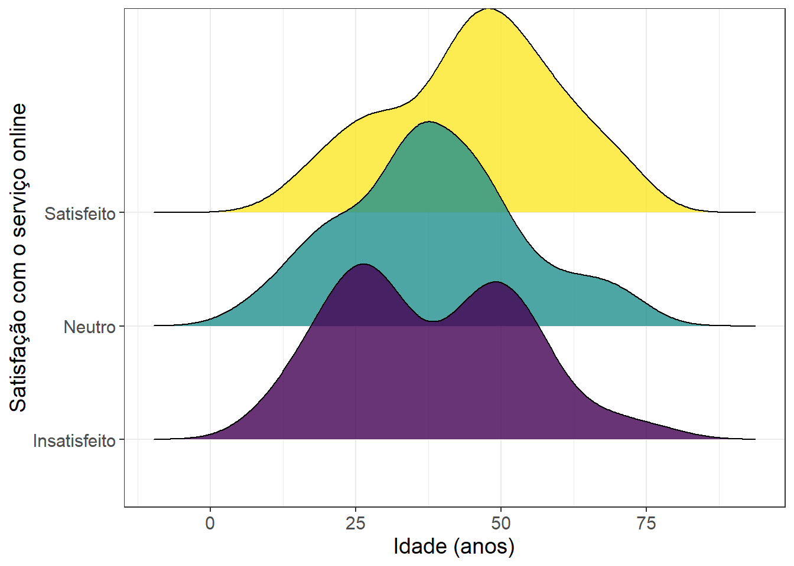
Esse gráfico é uma versão mais simples do gráfico facetado feito anteriormente. Ele evidencia mais a interpretação já feita naquele gráfico.
Você pode deixar os argumentos y e fill com variáveis diferentes para trazer mais informações para seu gráfico.
9.6GRÁFICO BOXPLOT
Na última aula prática, aprendemos a construir gráficos boxplot para uma única variável contínua. Lembre-se que o boxplot, também chamado de diagrama de caixa, é uma representação visual que resume a distribuição de uma variável numérica por meio de cinco medidas descritivas principais:
Mínimo
Primeiro quartil (Q1)
Mediana
Terceiro quartil (Q3)
Máximo
Além disso, o boxplot permite identificar valores discrepantes (outliers), tornando-se uma ferramenta essencial na análise exploratória de dados.
O boxplot se torna ainda mais informativo quando usamos variáveis categóricas para comparar grupos, permitindo observar diferenças na mediana, dispersão e presença de outliers entre categorias.
Se você deseja fazer boxplots horizontais, a estrutura básica é:
Por exemplo, vamos avaliar a distribuição da Idade para as categorias de Tipo do cliente:
Código
ggplot(data=Dados,mapping=aes(x=Cliente,y=Idade, fill=Cliente))+geom_boxplot(alpha=0.8)+xlab("Tipo de cliente")+ylab("Idade (anos)")+scale_fill_viridis(discrete=T)+theme_bw()+theme(text =element_text(size =14),legend.position="none")
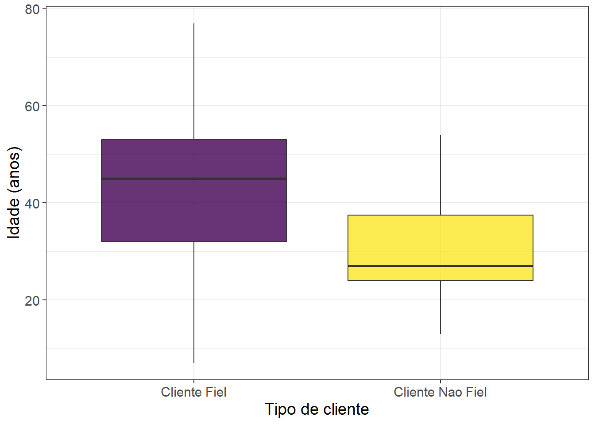
Os argumentos x e fill recebem a mesma variável para colorir cada boxplot de uma cor diferente.
Os clientes fiéis apresentam idades mais elevadas e maior variabilidade etária, enquanto os clientes não fiéis são predominantemente mais jovens e apresentam idades mais concentradas.
É possível, ainda, analisar a distribuição de uma variável contínua em função de uma variável categórica, trazendo ainda outra variável categórica para diferenciar os grupos por cores. Isso é feito colocando variáveis diferentes nos argumentos x e fill do mapping. Por exemplo, vamos avaliar a distribuição do IMC para homens e mulheres considerando aqueles respondentes que consultam nutricionista ou não.
Código
ggplot(data=Dados,mapping=aes(x=Cliente,y=Idade, fill=Genero))+geom_boxplot(alpha=0.8)+scale_fill_viridis(name="Gênero",discrete=T)+xlab("Tipo de cliente")+ylab("Idade (anos)")+theme_bw()+theme(text =element_text(size =14))
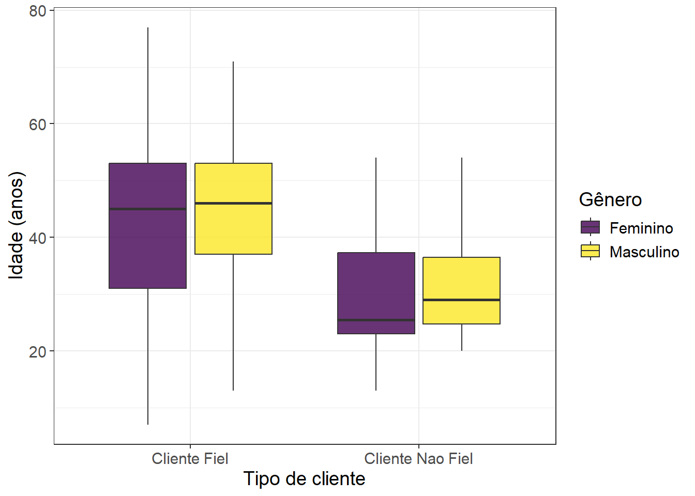
Você pode alterar as variáveis nos argumentos x e fill para favorecer a melhor informação a ser apresentada.
O gráfico reforça que clientes fiéis apresentam idades mais elevadas do que os não fiéis em ambos os gêneros. As distribuições de idade de homens e mulheres são relativamente semelhantes dentro de cada tipo de cliente, embora os homens apresentem medianas ligeiramente superiores, sugerindo que a diferença etária está mais associada à fidelidade do que ao gênero.
Você pode trazer mais variáveis qualitativas ainda com a utilização do facetamento.
9.7GRÁFICO BOXPLOT + VIOLINO
Na última aula prática, aprendemos a construir gráficos boxplot + violino para uma única variável contínua. Aqui vamos estender essa ideia combinando boxplot com violino para representar a distribuição de uma variável quantitativa em diferentes grupos.
Lembre-se que o violino mostra a forma da distribuição (densidade) ao longo dos valores; é especialmente útil para detectar multimodalidade e assimetrias. O boxplot, sobreposto ao violino, fornece medidas robustas (mediana, quartis) e destaque para outliers. Juntos, dão uma visão mais completa: forma da distribuição + resumo numérico.
Se você deseja fazer boxplots horizontais + violino, a estrutura básica é:
O Global Burden of Disease (GBD) é um projeto internacional de pesquisa em saúde pública que busca quantificar o impacto das doenças, lesões e fatores de risco sobre a população mundial. Ele fornece estimativas comparáveis de mortalidade, morbidade, incapacidade e expectativa de vida, permitindo identificar quais condições de saúde mais afetam diferentes populações e regiões ao longo do tempo.
O GBD foi criado em 1990 por uma parceria entre o Banco Mundial e a Organização Mundial da Saúde (OMS), liderado por Christopher Murray e Alan Lopez. Desde 2007, o projeto é coordenado pelo Institute for Health Metrics and Evaluation (IHME), da Universidade de Washington (EUA). Atualmente, o GBD cobre mais de 360 causas de doenças e lesões, mais de 80 fatores de risco e dados de mais de 200 países e territórios, com atualizações periódicas.
No Brasil, o GBD Brasil adapta essas estimativas às fontes de dados nacionais, como o SIM (Sistemas de Informações sobre Mortalidade) e SINASC (Sistema de Informações sobre Nascidos Vivos), permitindo análises detalhadas por estado, região, faixa etária, sexo e ano. Essa iniciativa apoia o planejamento de políticas públicas e a avaliação de intervenções de saúde.
GBD Brasil: informações específicas do GBD adaptadas para o Brasil.
GBD Compare: ferramenta interativa do IHME para comparar dados globais do GBD. - GBD Result Tools: ferramenta para baixar estimativas detalhadas do GBD por causa, idade, sexo e país.
Neste capítulo, utilizaremos dados referentes à mortalidade no Brasil e em suas unidades federativas. O indicador analisado é a taxa de mortalidade padronizada por idade, expressa por 100 mil habitantes.
A padronização por idade é um procedimento estatístico que permite comparar taxas entre populações com diferentes estruturas etárias, eliminando o efeito das variações na distribuição por idade. Isso é essencial, pois locais com populações mais idosas tendem a apresentar taxas brutas de mortalidade naturalmente mais altas. Assim, a taxa padronizada reflete melhor as diferenças reais na mortalidade, e não apenas as diferenças demográficas.
Cada linha da base representa uma combinação de local, ano, sexo e causa, com seus respectivos indicadores numéricos. Além dessas combinações, a última coluna apresenta o indicador socioeconômico SDI, para cada local e ano. Mais detalhes sobre as variáveis são descritos a seguir:
Acre, Alagoas, Amapá, Amazonas, Bahia, Ceará, Centro-Oeste, Distrito Federal, Espírito Santo, Goiás, Maranhão, Mato Grosso, Mato Grosso do Sul, Minas Gerais, Nordeste, Norte, Pará, Paraíba, Paraná, Pernambuco, Piauí, Rio de Janeiro, Rio Grande do Norte, Rio Grande do Sul, Santa Catarina, São Paulo, Sergipe, Sudeste, Sul, Brasil
Ano
Quantitativa
Ano de referência
Valores inteiros de 2000 a 2023
Sexo
Qualitativa
Sexo da população observada
Ambos, Feminino e Masculino
Causa
Qualitativa
Grupo de causas de doenças
Acidentes de transporte, Afecções maternas e neonatais, Autolesão e violência interpessoal, Deficiências nutricionais, Diabetes e doenças do rim, Distúrbios musculoesqueléticos, Doenças cardiovasculares, Doenças da pele e tecidos subcutâneos, Doenças digestivas, Doenças respiratórias crônicas, Doenças tropicais negligenciadas e malária, Enterite infecciosa, Ferimentos não intencionais, HIV/Aids e doenças sexualmente transmissíveis, Infecções respiratórias e tuberculose, Neoplasias, Outras doenças infecciosas, Outras doenças não transmissíveis, Transtornos devidos ao uso de substâncias psicoativas, Transtornos mentais e relacionados ao uso de substâncias, Transtornos neurológicos
Taxa
Quantitativa
Taxa de mortalidade padronizada por idade por 100 mil habitantes
Valores numéricos contínuos
SDI
Quantitativa
Índice de desenvolvimento socioeconômico
Valores numéricos contínuos, entre 0 e 1. Quanto mais próximo de 1 mais desenvolvido é o local
Com essa base de dados, pretende-se:
Explorar o comportamento temporal das taxas de mortalidade padronizadas por idade no Brasil, nas regiões e nos estados
Comparar padrões entre sexos e grupos de causas de mortalidade.
Investigar tendências regionais e temporais que indiquem desigualdades em saúde.
Relacionar os padrões observados ao nível de desenvolvimento socioeconômico (SDI) das unidades federativas.
A base de dados está armazenada no arquivoDadosQualiQuanti2.xlsx. Os comandos a seguir fazem a leitura dessa base de dados:
Código
Dados =read.xlsx("DadosGBD1.xlsx")
9.9GRÁFICO SÉRIE TEMPORAL
O gráfico de série temporal é uma ferramenta essencial para a análise de dados que variam ao longo do tempo. Ele representa cada observação em função de um eixo temporal, permitindo visualizar padrões, tendências e flutuações de uma variável quantitativa. Esse tipo de gráfico é amplamente utilizado em economia, epidemiologia, demografia, meteorologia e em diversas áreas que lidam com dados cronológicos.
Características principais:
Eixo temporal: O eixo horizontal (x) corresponde ao tempo, que pode estar em dias, meses, anos, trimestres ou qualquer outra unidade cronológica. O eixo vertical (y) representa os valores da variável observada.
Evolução ao longo do tempo: O gráfico mostra como a variável se comporta à medida que o tempo avança, possibilitando identificar períodos de crescimento, queda ou estabilidade.
Tendência geral: Muitas séries apresentam uma tendência de longo prazo. Essa tendência pode ser observada diretamente na linha que conecta os pontos.
Sazonalidade e ciclos: O gráfico facilita a identificação de padrões repetitivos ao longo do tempo (sazonalidade) ou ciclos mais longos.
Variações aleatórias: Nem todo comportamento segue um padrão claro. O gráfico mostra também flutuações imprevisíveis.
Outliers: Pontos isolados no tempo que destoam do padrão podem indicar eventos específicos ou erros de medição.
Grupos: É possível avaliar o comportamento temporal de diferentes grupos e facilitar a comparabilidade entre eles.
No R o gráfico de série temporal pode ser feito com o pacote ggplot2 a partir da função geométricageom_line()com a seguinte sintaxe:
ggplot(Dados,aes(x = VariavelTempo, y = VariavelQuanti)+geom_line()
Suponha o objetivo de avaliar o comportamento do Brasil com respeito às taxas de mortalidade por doenças cardiovasculares considerando ambos os sexos de 2000 a 2023. Tem-se, portanto, o seguinte código:
Código
DadosA = Dados %>%filter( Local =="Brasil", Causa =="Doenças cardiovasculares", Sexo =="Ambos")ggplot(data=DadosA,mapping=aes(x=Ano,y=Taxa))+geom_line()+xlab("Ano")+ylab("Taxa de mortalidade padronizada por idade \n por 100 mil habitantes")+theme_bw()+theme(text =element_text(size =14))
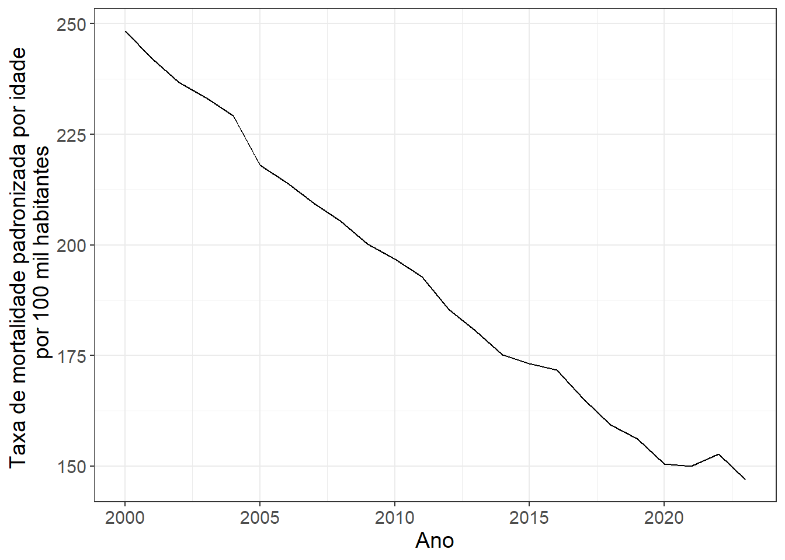
É evidente a tendência de decréscimo desse indicador para doenças cardiovasculares de 2000 a 2023. As taxas de mortalidade padronizada por idade vão de aproximadamente 250 óbitos por 100 mil habitantes (2000) até aproximadamente 150 óbitos por 100 mil habitantes (2023).
Para acrescentar novos efeitos estéticos a este gráfico, a função geom_line() tem os seguintes argumentos:
color: Define a cor da linha, ex.: geom_line(color = "blue")
linewidth: Define a espessura da linha, ex.: geom_line(size = 1.5)
linetype: Define o tipo da linha, ex.: geom_line(linetype = "dashed"). Opções:
alpha: Define a transparência da linha (0 a 1), ex.: geom_line(alpha = 0.7)
Além disso, você pode acrescentar a funçãogeom_point() para incluir os pontos em cada observação. As especificidades dessa função já foram vistos na seção onde estudamos o gráfico de dispersão. Por fim, também é possível acrescentar a camada scale_x_continuous para especificar os breaks nos anos.
Portanto, um gráfico melhor elaborado pode ser o seguinte:
Código
ggplot(data=DadosA,mapping=aes(x=Ano,y=Taxa))+geom_line(linewidth=2,col="red")+geom_point(size=4,col="red")+xlab("Ano")+ylab("Taxa de mortalidade padronizada por idade \n por 100 mil habitantes")+scale_x_continuous(breaks =seq(2000,2023,2))+theme_bw()+theme(text =element_text(size =14))
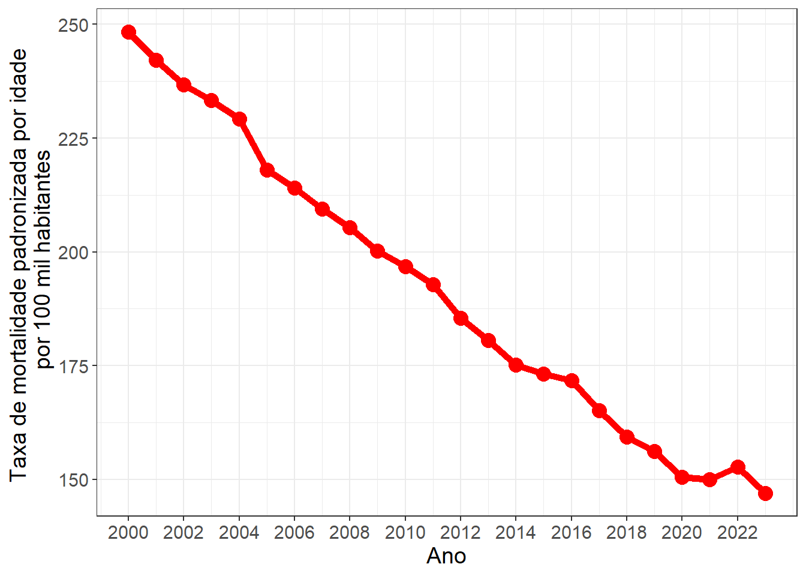
Considere agora o objetivo de avaliar o comportamento do Brasil e regiões com respeito às taxas de mortalidade por doenças cardiovasculares considerando ambos os sexos de 2000 a 2023. Nesse caso, teremos 6 linhas no mesmo gráfico (Brasil + 5 regiões). Para fazer isso no ggplot2, basta acrescentar no mapeamento o argumento color = VariavelQuali:
Código
DadosB = Dados %>%filter( Local =="Brasil"|Local =="Norte"| Local =="Nordeste"| Local =="Centro-Oeste"| Local =="Sul"| Local =="Sudeste", Causa =="Doenças cardiovasculares", Sexo =="Ambos")ggplot(data=DadosB,mapping=aes(x=Ano,y=Taxa,color = Local))+geom_line(linewidth=2)+geom_point(size=4)+xlab("Ano")+ylab("Taxa de mortalidade padronizada por idade \n por 100 mil habitantes")+scale_x_continuous(breaks =seq(2000,2023,2))+scale_color_brewer(palette ="Set1")+theme_bw()+theme(text =element_text(size =14))
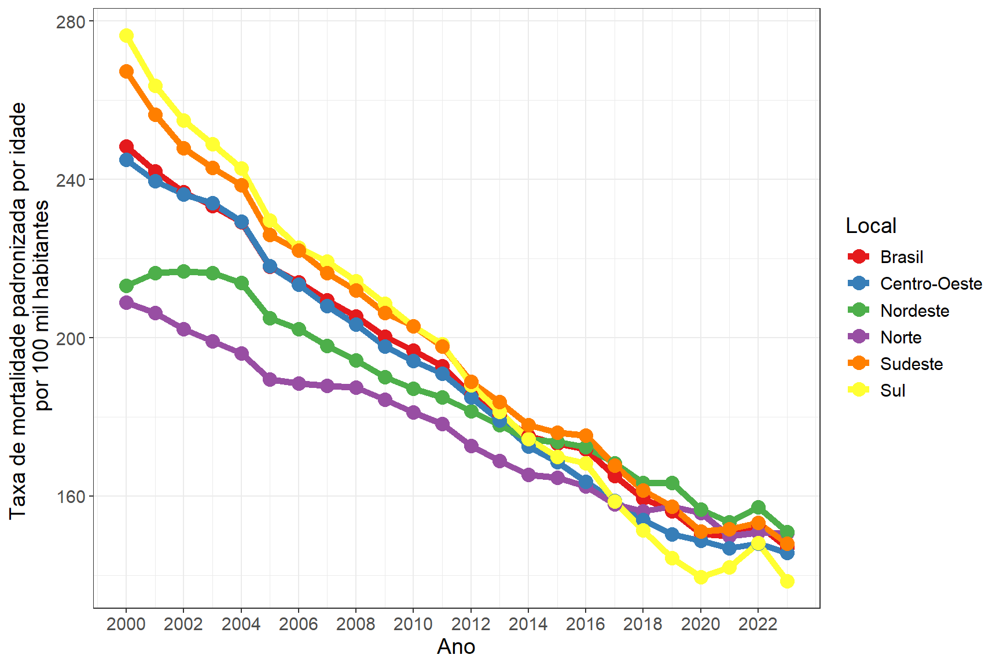
Note que, em 2000, havia maior diferença nas taxas de mortalidade entre as regiões. A região Sul apresentava as maiores taxas, ao passo que a região Norte apresentava as menores taxas. Ao longo dos anos, todas as regiões apresentam tendência de decréscimo e, em 2023, as taxas de mortalidade são bem próximas. Particularmente, em 2023, a região Sul apresenta a menor taxa de mortalidade e a região Nordeste apresenta a maior taxa de mortalidade.
O comando scale_color_brewer(palette = "Set1") utiliza a paleta de cores Set1 do pacote RColorBrewer para a coloração do gráfico.
Podemos ampliar as nossas comparações introduzindo novas variáveis através do facetamento. Suponha o objetivo de avaliar o comportamento do Brasil com respeito às taxas de mortalidade por doenças cardiovasculares considerando cada um dos sexos de 2000 a 2023. Tem-se, portanto, o seguinte código:
Código
DadosC = Dados %>%filter( Local =="Brasil"|Local =="Norte"| Local =="Nordeste"| Local =="Centro-Oeste"| Local =="Sul"| Local =="Sudeste", Causa =="Doenças cardiovasculares", Sexo =="Feminino"|Sexo =="Masculino")ggplot(data=DadosC,mapping=aes(x=Ano,y=Taxa,color = Local))+geom_line(linewidth=2)+geom_point(size=4)+xlab("Ano")+ylab("Taxa de mortalidade padronizada por idade \n por 100 mil habitantes")+facet_wrap(~Sexo)+scale_x_continuous(breaks =seq(2000,2023,2))+scale_color_brewer(palette ="Set1")+theme_bw()+theme(text =element_text(size =14),legend.position ="bottom")
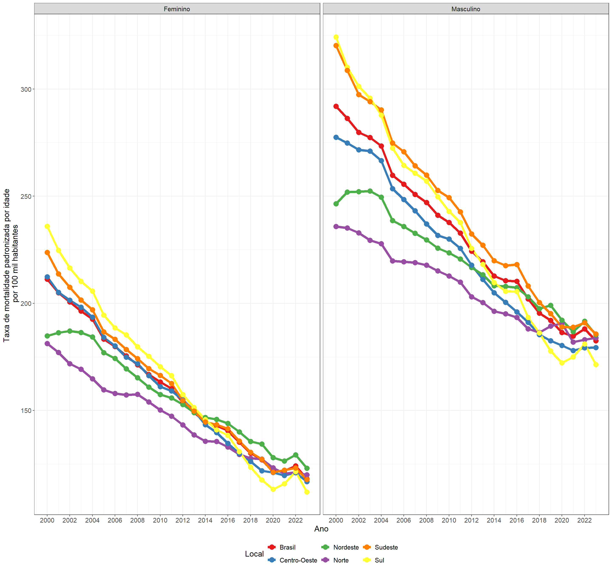
Em ambos os sexos as taxas de mortalidade decaem ao longo dos anos com um comportamento muito similar entre as regiões. A grande diferença reside na escala das taxas de mortalidade dos homens que são sempre maiores que as das mulheres.
9.9.1DICA SOBRE FACETAMENTO
Os comandos facet_wrap() e facet_grid() do pacote ggplot2 são amplamente utilizados para criar painéis (facetas) que exibem várias versões de um mesmo gráfico, separando os dados conforme uma ou mais variáveis categóricas.
Por padrão, todas as facetas compartilham os mesmos eixos x e y, o que facilita a comparação direta entre os painéis. No entanto, em algumas situações, é desejável que cada faceta possua sua própria escala, especialmente quando as magnitudes das variáveis variam bastante entre os grupos.
Para controlar o comportamento das escalas, utilizamos o argumento scales dentro de facet_wrap() (somente linhas ou somente colunas) ou facet_grid() (linhas e colunas). As opções disponíveis são:
Valor de scales
Descrição
"fixed" (padrão)
Todas as facetas compartilham as mesmas escalas nos eixos x e y.
"free"
Tanto o eixo x quanto o eixo y são ajustados de forma independente em cada faceta.
"free_x"
Apenas o eixo x é ajustado livremente; o eixo y permanece fixo.
"free_y"
Apenas o eixo y é ajustado livremente; o eixo x permanece fixo.
9.10GRÁFICO DE ÁREA
O gráfico de área representa variáveis quantitativas ao longo do tempo ou de uma sequência ordenada, destacando a magnitude de cada categoria. Ele utiliza cores preenchidas para mostrar a contribuição de diferentes grupos dentro do total.
Características principais:
Eixo horizontal (x): Representa o tempo, sequência ou outra variável ordenada (dias, meses, anos, trimestres, categorias ordenadas etc.).
Eixo vertical (y): Representa uma proporção total de uma variável quantitativa.
Uso do fill: Permite atribuir cores diferentes a categorias, facilitando a visualização da contribuição relativa de cada grupo ao total.
Comparação de categorias: As cores preenchidas ajudam a comparar variações de diferentes grupos, mostrando tanto a tendência individual quanto a composição total.
Tendência e variações: Permite identificar crescimento, queda ou estabilidade, além de flutuações e outliers.
Visualização intuitiva: O preenchimento colorido torna mais fácil perceber o volume total e as proporções relativas, sendo visualmente mais impactante e informativo para apresentar dados acumulados por categoria.
No R, o gráfico de área pode ser feito com o pacote ggplot2 usando a função geométrica geom_area(). A sintaxe básica é a seguinte:
ggplot(Dados,aes(x = VariavelTempo, y = VariavelQuanti,fill = VariavelQuali)+geom_area(position ="fill")
Por exemplo, suponha que seja de interesse fazer um gráfico de área para todas as 20 causas de mortalidade investigando a evolução da magnitude das suas taxas de mortalidade padronizadas por idade ao longo dos anos para o Brasil e ambos os sexos. Se juntarmos todas as causas, temos uma taxa global de óbito por todas as causas. Assim, com o gráfico de área conseguiremos ver quais causas específicas contribuem mais para este total. Tem-se, portanto, o seguinte comando:
Código
DadosA = Dados %>%filter( Local =="Brasil", Sexo =="Ambos")ggplot(data=DadosA,mapping=aes(x=Ano,y=Taxa,fill = Causa))+geom_area(position ="fill")+xlab("Ano")+ylab("Proporção de óbitos")+scale_x_continuous(breaks =seq(2000,2023,2))+theme_bw()+guides(fill =guide_legend(ncol =2)) +scale_fill_manual(name =" ",values =glasbey()) +theme(text =element_text(size =14),legend.position ="bottom")
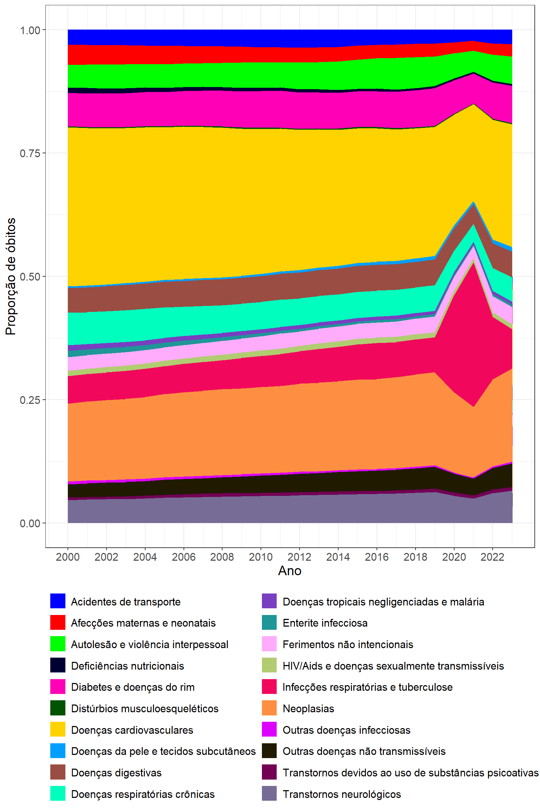
O gráfico retrata bem a transição epidemiológica brasileira, em que as doenças crônicas não transmissíveis (cardiovasculares, neoplasias, respiratórias e metabólicas) dominam o perfil de mortalidade. As doenças infecciosas e condições maternas/neonatais perdem importância relativa; Há um episódio transitório (2020) de aumento de mortalidade por causas infecciosas (pandemia); E as causas externas se mantêm como um desafio persistente, mas estável.
O comando guides(fill = guide_legend(ncol = 2)) força a legenda a ter 2 colunas.
O comando scale_fill_manual(name = " ",values = glasbey()) utiliza a paleta glasbey do pacote pals.
9.11GRÁFICO DE DISPERSÃO
O gráfico de dispersão foi apresentado anteriormente como uma das formas mais diretas de visualizar a relação entre duas variáveis quantitativas. Ele continua sendo uma ferramenta essencial para identificar tendências, padrões, agrupamentos e outliers nos dados.
Neste capítulo, retomamos o gráfico de dispersão para aprofundar sua análise visual, introduzindo novas variáveis a partir dos seguintes:
os rótulos (labels), que permitem identificar pontos específicos diretamente no gráfico.
o facetamento, que permite dividir o gráfico em painéis (subgráficos) com base em variáveis categóricas;
Suponha que seja de interesse fazer um gráfico de dispersão para as 27 unidades federativas brasileiras relacionando a taxa de mortalidade padronizada por idade de neoplasias com o índice SDI, considerando o ano de 2023 e ambos os sexos. Segue o código que já fizemos no último capítulo:
Código
DadosA = Dados %>%filter(Local!="Brasil"&Local!="Norte"&Local!="Sul"& Local!="Sudeste"&Local!="Centro-Oeste"&Local!="Nordeste", Ano==2023, Causa=="Neoplasias", Sexo=="Ambos")ggplot(DadosA, aes(x = SDI, y = Taxa)) +geom_point() +labs(y ="Taxa de mortalidade padronizada por idade por 100 mil habitantes", x ="SDI") +theme_bw() +geom_smooth( ) +stat_cor(method="spearman",size=5)
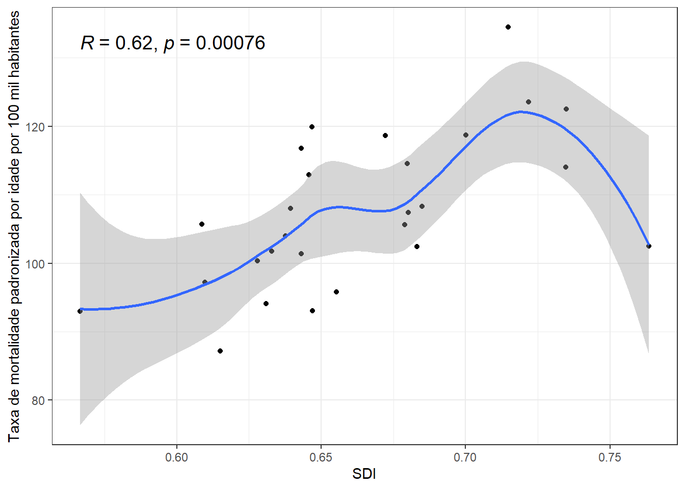
Como temos poucos pontos, podemos criar uma label para cada um e fazer isso de modo que não haja sobreposições. Isso pode ser feito com o pacote ggrepel a partir da seguinte sintaxe:
ggplot(DadosA, aes(x = SDI, y = Taxa)) +geom_point() +geom_label_repel(aes(label = Sigla), size =4) +labs(y ="Taxa de mortalidade padronizada por idade por 100 mil habitantes", x ="SDI") +theme_bw() +geom_smooth( ) +stat_cor(method="spearman",size=5)
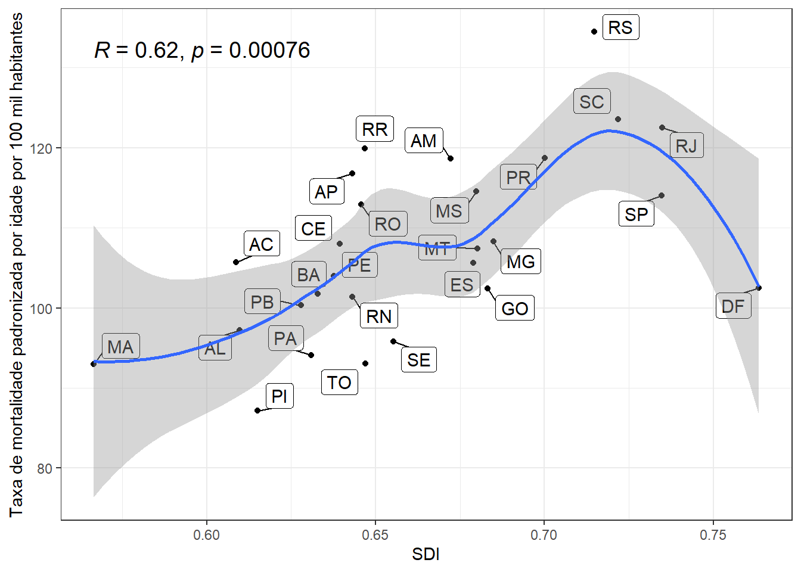
Como quanto maior o SDI maior o desenvolvimento do estado, percebemos que as maiores taxas são detectadas em estados mais bem desenvolvidos. O coeficiente de 0.62 aponta pra uma relação monotônica crescente moderada.
9.12GRÁFICO HEATMAP
O gráfico de heatmap (ou mapa de calor) é uma representação visual em que cores são usadas para expressar valores de uma variável quantitativa em uma grade bidimensional.
Cada célula (ou quadrado) da grade representa a interseção entre duas variáveis categóricas, e a intensidade da cor indica um ranking de qualquer uma das duas variáveis.
Características principais:
Eixos x e y: Representam categorias ou níveis de duas variáveis qualitativas (por exemplo, meses × regiões, disciplinas × alunos, produtos × períodos etc.).
Escala de cores: representam um ranking ou ordem relativa, em que as cores simbolizam posições ou classificações (ex.: 1º, 2º, 3º lugar etc.).
Percepção rápida de padrões: O uso de cores facilita a identificação de tendências, agrupamentos e contrastes, permitindo perceber rapidamente onde há valores altos ou baixos.
Paletas de cores: É fundamental escolher uma paleta adequada.
No R, o gráfico heatmap é feito com a função geométrica geom_tile. Suponha que, para o ano de 2023 e ambos os sexos, queremos construir um mapa de calor ranqueando os 26 estados brasileiros mais o distrito federal de acordo com a taxa de mortalidade padronizada por idade observada em cada uma das 20 causas. Ou seja, para cada causa, onde são observados os maiores e menores valores?
Código
DadosA = Dados %>%filter( Local !="Brasil"& Local !="Norte"& Local !="Nordeste"& Local !="Centro-Oeste"& Local !="Sul"& Local !="Sudeste", Sexo =="Ambos", Ano ==2023)# Organizando os estados por regiãoDadosA$Local <-factor(DadosA$Local,levels =rev(c("Acre","Amazonas","Amapá","Pará", "Rondônia","Roraima","Tocantins", "Alagoas","Bahia", "Ceará","Maranhão", "Paraíba","Pernambuco", "Piauí","Rio Grande do Norte", "Sergipe","Distrito Federal","Mato Grosso", "Mato Grosso do Sul","Goiás","Espírito Santo","Minas Gerais", "Rio de Janeiro","São Paulo","Paraná","Rio Grande do Sul", "Santa Catarina")))### Criando um ranking por causaDadosA = DadosA %>%group_by(Causa)%>%mutate(rank =factor(dense_rank(desc(Taxa))))## Escolhendo 27 cores da paleta RdYlBumycolors <-colorRampPalette(brewer.pal(8, "RdYlBu"))(27)ggplot(DadosA, aes(x = Causa, y = Local)) +geom_tile(aes(fill = rank), width =0.95, height =0.95) +geom_text(aes(label =round(Taxa, 1))) +scale_fill_manual(values = mycolors, name ="Rate / 100,000") +scale_x_discrete(guide =guide_axis(angle =90), position ="top") +theme_bw() +theme(legend.position ="none",axis.title =element_blank())
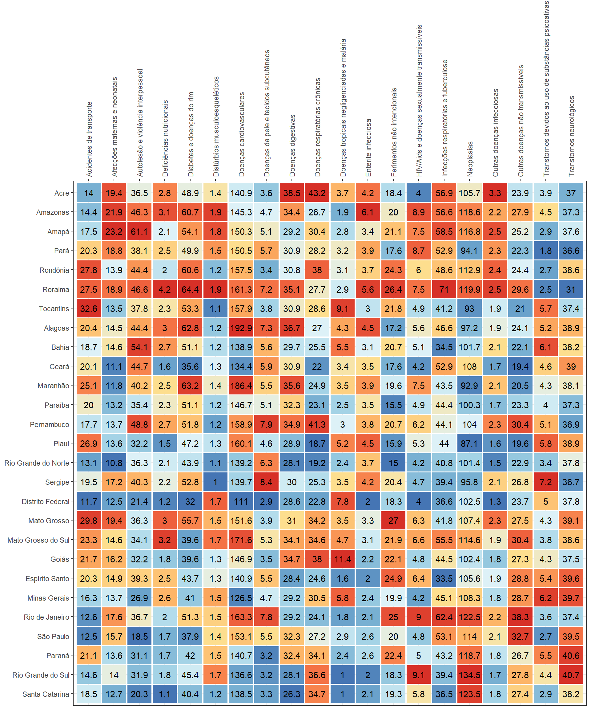
Observa-se heterogeneidade entre os estados, indicando que o perfil de mortalidade varia conforme a região e a causa. Causas como doenças cardiovasculares, neoplasias e diabetes apresentam taxas elevadas em quase todos os estados, mas com destaque para estados do Nordeste e Norte, que tendem a ter mais células em tons vermelhos nessas colunas. Já estados do Sul e Sudeste, como Santa Catarina, São Paulo e Rio Grande do Sul, mostram frequentemente tons mais frios (azulados), sugerindo menores taxas relativas em várias causas. Em causas específicas, como violência interpessoal e acidentes de transporte, aparecem manchas vermelhas intensas em estados do Norte e Nordeste, refletindo padrões conhecidos de maior mortalidade por causas externas nessas regiões.
9.13SITUAÇÃO PRÁTICA MOTIVADORA III
Voltemos, novamente, aos dados do GBD para uma última aplicação neste capítulo. Considere agora os dados da taxa de mortalidade para Brasil, considerando homens e mulheres no ano de 2023, considerando diferentes faixas etárias para 2 causas de morte: Doenças respiratórias crônicas e Doenças tropicais negligenciadas e malária
Cada linha da base representa uma combinação entre faixa etária, sexo e causa de morte, com sua respectiva taxa de mortalidade por 100 mil habitantes.
Essa estrutura permite comparar o impacto relativo das diferentes causas de óbito entre grupos etários.
Variável
Tipo
Descrição
Categorias / Observações
Sexo
Qualitativa
Sexo da população analisada
Masculino e Feminino
Faixa_Etaria
Qualitativa
Faixa etária da população analisada
Menores de 5 anos, 5–9 anos, 10–14 anos, 15–19 anos, 20–24 anos, 25–29 anos, 30–34 anos, 35–39 anos, 40–44 anos, 45–49 anos, 50–54 anos, 55–59 anos, 60–64 anos, 65–69 anos, 70–74 anos, 75–79 anos, 80+ anos
cause_name
Qualitativa
Grupo de causas de doenças
Doenças respiratórias crônicas, Doenças tropicais negligenciadas e malária
taxa
Quantitativa
Taxa de mortalidade padronizada por idade (por 100 mil habitantes)
Valores numéricos contínuos
Essa base pode ser utilizada para análises comparativas entre faixas etárias, permitindo observar como as taxas de mortalidade variam conforme a idade e o tipo de causa.
A base de dados está armazenada no arquivoDadosQualiQuanti3.xlsx. Os comandos a seguir fazem a leitura dessa base de dados:
Código
Dados =read.xlsx("DadosGBD2.xlsx")
9.14GRÁFICO PIRÂMIDE
O gráfico pirâmide (ou pirâmide etária) é uma representação visual usada para comparar distribuições entre dois grupos (geralmente população masculina e feminina) ao longo de categorias ordenadas, como faixas etárias.
Ele é amplamente utilizado em demografia, epidemiologia e ciências sociais, pois permite observar a estrutura etária e as diferenças de composição entre grupos.
Características principais:
Eixo vertical (y): Representa as categorias ordenadas, como faixas de idade (por exemplo, “0–4 anos”, “5–9 anos”, “10–14 anos” etc.).
Eixo horizontal (x): Indica a proporção ou frequência de indivíduos em cada faixa.
Normalmente, os valores positivos representam um grupo (ex.: mulheres) e os valores negativos, o outro (ex.: homens).
Formato simétrico: Quando os dois lados têm magnitudes semelhantes, a pirâmide apresenta simetria, indicando equilíbrio entre os grupos.
Diferenças acentuadas sugerem desequilíbrios demográficos ou epidemiológicos.
Interpretação:
Base larga: Indica predominância de grupos jovens (população em crescimento).
Topo largo: Indica maior proporção de idosos (envelhecimento populacional).
Assimetria entre lados: Pode indicar diferenças por sexo, região ou condição de saúde.
Aplicações:
Comparação de populações (homens × mulheres, urbano × rural etc.).
Análise de distribuições de taxas (ex.: mortalidade, incidência de doenças).
Representação de mudanças ao longo do tempo, com várias pirâmides sobrepostas ou lado a lado.
Dica:
Para melhorar a leitura, é importante padronizar escalas entre os lados, utilizar cores contrastantes e manter a ordem crescente das faixas etárias de baixo para cima.
No R este gráfico é feito com o comando geom_bar fazendo algumas adaptações estratégicas para formar a pirâmide. Suponha o objetivo de fazer o gráfico pirâmide para a taxa de mortalidade por Doenças respiratórias crônicas no Brasil em 2023, para ambos os sexos. Os comandos a seguir fazem este gráfico:
Código
DadosA <- Dados %>%filter(Causa =="Doenças tropicais negligenciadas e malária")# Definir ordem das faixas etáriasidade_nivel <-c("Menores de 5 anos", "5-9 anos", "10-14 anos", "15 -19 anos","20-24 anos", "25-29 anos", "30-34 anos", "35-39 anos", "40-44 anos","45-49 anos", "50-54 anos", "55-59 anos", "60-64 anos", "65-69 anos","70-74 anos", "75-79 anos", "80+ anos")# Ajustar faixas etárias e sinal das taxas (negativo para feminino)DadosA <- DadosA %>%mutate(Faixa_Etaria =factor(Faixa_Etaria, levels = idade_nivel),Taxa =ifelse(Sexo =="Feminino", -Taxa, Taxa) )# Gráfico pirâmideggplot(DadosA, aes(x = Faixa_Etaria, y = Taxa, fill = Sexo)) +geom_bar(stat ="identity") +geom_text(aes(label =round(abs(Taxa), 1), hjust =ifelse(Sexo =="Feminino", 1.1, -0.1)),size =4) +geom_hline(yintercept =0, colour ="white", lwd =1) +coord_flip() +scale_y_continuous(limits =c(-40, 48),breaks =seq(-40, 45, by =5),labels =abs(seq(-40, 45, by =5)) ) +scale_fill_manual(values =c("Feminino"="orange", "Masculino"="purple")) +theme_bw(base_size =18) +theme(legend.position ="bottom",legend.title =element_blank() ) +labs(y ="Taxa de mortalidade por 100 mil habitantes",x ="Faixa etária" )
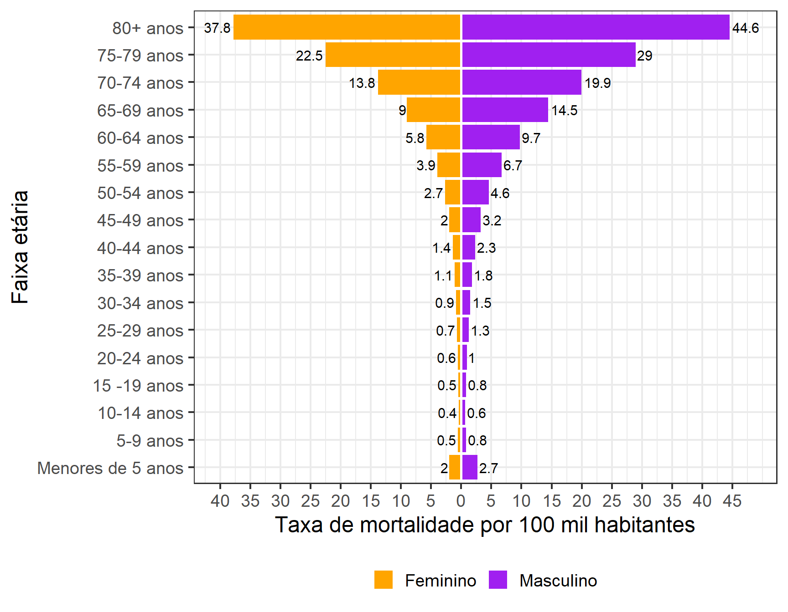
Observa-se que A mortalidade aumenta fortemente com a idade, sendo muito mais elevada nas faixas etárias acima de 60 anos, especialmente entre 80 anos ou mais, o que indica maior vulnerabilidade da população idosa. As mulheres (em laranja) apresentam taxas de mortalidade ligeiramente menores do que os homens (em roxo) em quase todas as faixas etárias, com exceção dos grupos mais jovens, onde as diferenças são pequenas. A diferença entre os sexos se amplia nas idades mais avançadas, sugerindo que os homens idosos sofrem mais com essas doenças, possivelmente devido a fatores biológicos, comportamentais ou de acesso aos serviços de saúde. Nas faixas etárias abaixo de 20 anos, as taxas são baixas, indicando menor impacto das doenças tropicais nesse grupo populacional.
Código fonte
---output: html_documenteditor_options: chunk_output_type: console---# **VARIÁVEIS QUALITATIVAS E QUANTITATIVAS**## **INTRODUÇÃO**Após estudarmos separadamente as **variáveis qualitativas** e as **variáveis quantitativas**, chegamos agora ao momento de compreender como essas duas naturezas de informação podem ser **analisadas em conjunto**. Essa integração é fundamental para ampliar a compreensão dos dados, pois permite investigar **como diferentes aspectos de uma população ou fenômeno se relacionam**.Enquanto o estudo isolado de uma variável descreve suas características próprias, o estudo conjunto busca identificar **padrões, associações e dependências** entre variáveis de tipos distintos. Essa etapa é essencial para compreender o comportamento dos dados de forma mais completa, revelando **como variações em uma variável podem estar associadas a diferenças em outra**.Neste capítulo, abordaremos as **formas de representar** e analisar essas **relações**, destacando a importância de **interpretar os resultados sempre considerando a natureza de cada variável** e o contexto da investigação.Veremos os **seguintes gráficos** neste capítulo:* **Gráfico Histograma estratificado** * **Gráfico de Densidade** * **Gráfico Ridge Line*** **Gráfico Boxplot** * **Gráfico Boxplot + Gráfico Violino** * **Gráfico Série Temporal*** **Gráfico de Área*** **Gráfico de Dispersão*** **Gráfico Heatmap*** **Gráfico Pirâmide Etária**Os **pacotes** utilizados neste capítulo serão:```{r,warning=FALSE,message=FALSE}library(openxlsx) # Leitura de bases de dados library(dplyr) # Manipulação de dados library(ggplot2) # Gráficoslibrary(ggridges) # Gráfico Ridge Linelibrary(viridis) # Escala de coreslibrary(RColorBrewer) # Paleta de coreslibrary(pals) # Paleta de coreslibrary(ggrepel) # Repelir pontos no gráfico de dispersãolibrary(ggpubr) # Adiciona correlação ```## **SITUAÇÃO PRÁTICA MOTIVADORA**Neste tópico, utilizaremos uma base de dados amplamente difundida em plataformas de ciência de dados, especialmente no `Kaggle`, voltada para o estudo da **satisfação de passageiros de companhias aéreas**.A base foi construída com o objetivo de representar um cenário típico de avaliação da experiência de clientes no transporte aéreo.- Cada observação corresponde a um passageiro - O foco central é a **percepção do cliente sobre o serviço prestado** - Os dados refletem situações comuns enfrentadas em voos comerciais É importante destacar a natureza desta base:- Trata-se de uma base **de uso educacional e para modelagem** - Os dados são **realistas**, isto é: - seguem padrões plausíveis do mundo real - reproduzem estruturas comuns em pesquisas de satisfação Por outro lado:- Não há documentação completa sobre: - processo de amostragem - instituição responsável pela coleta - companhia aérea específica envolvida Diante disso, devemos encarar esta base como:- ✔️ Uma representação **consistente e útil** de um problema real - ✔️ Adequada para: - exploração de dados - construção de modelos - aprendizado de técnicas estatísticas Para hoje, selecionei 200 pessoas que foram entrevistadas com respeito às seguintes variáveis:```{r, echo=F, message=F, warning=F}library(knitr)library(kableExtra)#---------------------------# Variáveis resposta#---------------------------resposta <-data.frame(Variavel =c("WiFi","Partida_Chegada","Local_Portao","Comida_Bebida","Servico_Online","Conforto_Assento","Entretenimento_Voo","Servico_Bordo","Bagagem","Checkin.service","Limpeza" ),Significado =c("Satisfação com o serviço de Wi-Fi durante o voo","Satisfação com os horários de partida e chegada","Satisfação com a localização do portão","Satisfação com comidas e bebidas","Satisfação com os serviços online","Satisfação com o conforto do assento","Satisfação com o entretenimento a bordo","Satisfação com o atendimento durante o voo","Satisfação com o serviço de bagagens","Satisfação com o processo de check-in","Satisfação com a limpeza da aeronave" ),Categorias =rep("Satisfeito / Neutro / Insatisfeito",11 ))kable( resposta,caption ="Variáveis Resposta (Satisfação do Cliente)",align ="l") %>%kable_styling(full_width =FALSE,position ="center" ) %>%row_spec(0, bold =TRUE)``````{r,echo=F,message=F,warning=F}#---------------------------# Fatores de exposição#---------------------------exposicao <-data.frame(Variavel =c("Genero","Cliente","Idade","Tipo_Viagem","Classe","Distancia","Atraso_Partida","Atraso_Chegada" ),Significado =c("Sexo do passageiro","Tipo de cliente (fidelidade)","Idade do(a) passageiro(a)","Motivo da viagem","Classe do voo","Distância percorrida no voo","Atraso na partida","Atraso na chegada" ),Categorias =c("Masculino / Feminino","Cliente Fiel / Cliente Não Fiel","Anos completos","Negócios / Pessoal","Executiva / Econômica / Econômica Plus","Quilômetros (Km)","Minutos completos","Minutos completos" ))kable(exposicao,caption ="Fatores de Exposição",align ="l") %>%kable_styling(full_width =FALSE, position ="center") %>%row_spec(0, bold =TRUE)```A base de dados está armazenada no arquivo `DadosAviao.xlsx`. Para ler a base de dados, utilize os seguintes comandos:```{r}Dados =read.xlsx("DadosAviao.xlsx")```## **GRÁFICO HISTOGRAMA ESTRATIFICADO**Na última aula prática, vimos o **gráfico histograma aplicado a uma única variável quantitativa**, o que nos permitiu observar como **os dados se distribuem e identificar padrões como simetria, caudas longas e multimodalidade**.No entanto, em **muitos contextos de análise**, não estamos interessados apenas em uma distribuição geral, mas em como ela se comporta em **diferentes grupos**. Com o pacote `ggplot2`, aprendemos a como **fazer histogramas estratificados, colorindo o gráfico de acordo com categorias de uma variável qualitativa**. A sintaxe será a seguinte:```rggplot(Dados, mapping =aes(x=VariavelQuanti,fill=VariavelQuali))+geom_histogram()s```> O histograma mostra que os clientes fiéis predominam em praticamente todas as faixas etárias, com maior concentração entre aproximadamente 30 e 60 anos, especialmente na faixa de 40 a 50 anos. Já os clientes não fiéis são menos frequentes e apresentam perfil mais jovem, concentrando-se principalmente entre 20 e 40 anos, com redução acentuada a partir dos 40 anos.O **histograma estratificado permite visualizar de forma direta a distribuição empírica de uma variável contínua dentro de cada categoria**, mostrando a **proporção de observações em cada faixa** e possibilitando **comparações visuais imediatas entre os grupos**. **Sem perda de generalidade**, vamos usar o **critério de Scott** para a escolha do **número de barras do gráfico e a altura das barras será dada pela frequência relativa**. Por exemplo, suponha que seja de interesse **avaliar o histograma da variável idade, estratificando ela pelo tipo de cliente**:```{r}bins_scott <-nclass.scott(Dados$Idade)ggplot(Dados,mapping=aes(x=Idade,fill=Cliente)) +geom_histogram(aes(y =after_stat(count /sum(count))),color="black",bins=bins_scott)+scale_fill_viridis(name="Tipo de cliente",discrete=T)+scale_y_continuous(labels = scales::percent)+ylab("Frequência Relativa (%)")+xlab("Idade (anos)")+theme_bw() +theme(text =element_text(size =14))```> As viagens pessoais concentram-se principalmente nas menores distâncias, tornando-se menos frequentes à medida que a distância aumenta. Já as viagens a negócios apresentam maior dispersão e predominam nas distâncias mais longas.## **GRÁFICO DE DENSIDADE**Na última aula prática, aprendemos a construir **gráficos de densidade para uma única variável contínua**, o que nos permitiu observar como os dados se distribuem e **identificar padrões como simetria, caudas longas e multimodalidade**. No entanto, em **muitos contextos de análise**, não estamos interessados **apenas em uma distribuição geral**, mas em como ela se **comporta em diferentes grupos**.Em outras palavras, é como se fizéssemos um **histograma independente para cada grupo e, posteriormente, cada histograma é suavizado. Assim conseguimos avaliar com mais detalhes as características de cada grupo sem o efeito do tamanho da amostra**.Essas **comparações entre grupos são fundamentais**, pois revelam **diferenças estruturais** que ficariam escondidas em um gráfico de densidade único. Para isso, utilizamos **gráficos múltiplos de densidade**, que permitem visualizar **várias distribuições no mesmo espaço** (sobrepostos) ou em **painéis separados** (facetados).### **SOBREPOSIÇÃO**Os gráficos de densidade **sobrepostos** são úteis quando desejamos **comparar visualmente distribuições entre grupos** de forma direta, utilizando **cores ou transparências** para distinguir cada grupo dentro do mesmo sistema de eixos. Eles facilitam a percepção de **diferenças nas distribuições**, permitindo identificar, por exemplo, se um grupo tende a valores mais altos ou mais baixos que outro.Esse **tipo de visualização** é **particularmente indicado quando**:- O número de grupos é pequeno (geralmente até 4), para evitar **sobrecarga visual**;- Deseja-se destacar **diferenças sutis** entre distribuições semelhantes;- Há interesse em mostrar a **sobreposição real** das áreas de densidade, revelando onde as distribuições coincidem ou se afastam.> Um ponto importante é o **uso da transparência (`alpha`)**, que ajuda a enxergar todas as curvas quando elas se sobrepõem. A escolha adequada de cores e transparências é essencial para manter a legibilidade do gráfico.No `ggplot2`, para **fazermos gráficos de densidade sobrepostos**, precisaremos da seguinte **estrutura básica**:```rggplot(Dados,aes(x=VariavelQuanti,fill=VariavelQuali))+geom_density()```Assim, o argumento `fill` é responsável por **fazer a sobreposição dos gráficos**. Por exemplo, para **avaliar a distribuição da idade dos respondentes de acordo com o tipo de cliente**, tem-se os seguintes gráficos de densidade:```{r}ggplot(Dados, aes(x = Idade,fill=Cliente)) +geom_density(alpha=0.6,linewidth =1) +scale_fill_viridis(name="Tipo de cliente",discrete=T)+xlab("Idade") +ylab("Densidade") +theme_bw() +theme(text =element_text(size =14))```> O gráfico de densidade evidencia melhor a diferença entre os grupos: clientes não fiéis concentram-se em idades mais jovens, com pico próximo dos 25 anos, enquanto clientes fiéis apresentam idades mais elevadas e distribuição mais dispersa, com pico em torno dos 45–50 anos.Em comparação com o gráfico anterior, o histograma facilita visualizar a frequência em faixas de idade, mas depende da escolha dos intervalos e pode ser influenciado pelo tamanho dos grupos; já o gráfico de densidade suaviza a distribuição e normaliza cada grupo, sendo mais adequado para comparar o formato das distribuições quando os tamanhos amostrais são diferentes.### **FACETAMENTO**Quando há muitos grupos ou quando as distribuições se sobrepõem em excesso, o **gráfico de densidade sobreposto** pode se tornar confuso e dificultar a interpretação. Nessas situações, é mais apropriado utilizar **gráficos facetados**, que exibem cada grupo em **painéis separados**, mantendo os mesmos eixos e escalas para facilitar a comparação.O **facetamento** permite observar com clareza a **forma da distribuição** de cada grupo individualmente, sem o problema da sobreposição de cores. Além disso, ele ajuda a identificar **padrões estruturais** — como mudanças de assimetria, deslocamento de médias ou presença de multimodalidade — que podem não ser perceptíveis em um gráfico combinado.Nesses casos, pode ser mais interessante fazer uma abordagem múltipla a partir do facetamento, utilizando as funções já vistas `facet_wrap` ou `facet_grid`. Por exemplo, para avaliar o comportamento da Idade de acordo com a satisfação com o serviços online:```{r}ggplot(Dados, aes(x = Idade,fill=Servico_Online)) +geom_density(alpha=0.8,linewidth =1) +xlab("Idade (anos)") +facet_wrap(~Servico_Online,ncol=1)+scale_fill_viridis(discrete=T)+ylab("Densidade") +theme_bw() +theme(text =element_text(size =14),legend.position ="none")```> Perceba que o mapeamento `fill` coloca cores nos gráficos. Além disso, o comando `facet_wrap(~Servico_Online,ncol=1)` cria o facetamento da variável `Servico_Online` em uma única coluna. Por fim, o comando `theme(legend.position="none")` remove a legenda.> A distribuição etária varia conforme a satisfação com os serviços online: clientes satisfeitos concentram-se em idades mais elevadas, sobretudo em torno dos 45–55 anos, enquanto os neutros se concentram mais em torno dos 35–45 anos. Entre os insatisfeitos, a distribuição é mais heterogênea e apresenta dois agrupamentos etários, aproximadamente em torno dos 25–30 e 45–50 anos.Com o facetamento, podemos **envolver mais de uma variável qualitativa**. Assim, é possível verificar como a **variável quantitativa se distribui em cada combinação das categorias das variáveis qualitativas**. Por exemplo, suponha que seja de interesse avaliar a **distribuição da idade nos tipos de clientes considerando o sexo**. Assim, tem-se os seguintes comandos:```{r}ggplot(Dados, aes(x = Idade,fill=Cliente)) +geom_density(alpha=0.8,linewidth =1) +xlab("Idade (anos)") +facet_wrap(~Genero,ncol=1)+scale_fill_viridis(name="Tipo de cliente",discrete=T)+ylab("Densidade") +theme_bw() +theme(text =element_text(size =14))```> O gráfico evidencia uma relação entre idade e fidelidade semelhante em ambos os gêneros, com clientes não fiéis concentrados em idades mais jovens e clientes fiéis em idades mais elevadas. Entretanto, entre os homens essa separação é mais acentuada, com menor sobreposição entre as distribuições, enquanto entre as mulheres há maior sobreposição e uma distribuição etária mais dispersa entre as clientes fiéis, sugerindo descritivamente que o padrão de fidelidade associado à idade pode variar em intensidade conforme o gênero.## **GRÁFICO RIDGE LINE**O **gráfico ridge line** é uma forma avançada de visualizar a **distribuição de uma variável contínua** em diferentes grupos, combinando conceitos de **densidade** e **comparação múltipla**. Ele é chamado de *ridge line* (ou *joy plot*) porque lembra uma série de montanhas sobrepostas, com cada "colina" representando a distribuição de um grupo diferente.**Características e vantagens**:- Permite **comparar várias distribuições simultaneamente** em um único gráfico, de forma mais clara que os gráficos de densidade sobrepostos tradicionais, principalmente quando há muitos grupos. - Cada grupo é representado por uma **curva suavizada de densidade**, e elas são empilhadas verticalmente, mantendo a comparabilidade. - Possibilita **identificar padrões de dispersão, assimetria e multimodalidade** em cada grupo, sem que as curvas se confundam visualmente. - Pode incluir cores ou preenchimentos para **destacar categorias adicionais**, adicionando mais uma dimensão de informação. **Quando usar**:- Quando temos **muitos grupos** e os gráficos sobrepostos ficariam poluídos. - Para mostrar **diferenças sutis entre distribuições** de forma organizada. - Quando se quer uma alternativa estética e informativa aos **boxplots múltiplos** ou **densidades sobrepostas**.No `R`, **conseguimos fazer o gráfico Ridge Line com o pacote** `ggridges`. A sintaxe **básica é feita com a função geométrica** `geom_density_ridges` com os seguintes comandos:```rggplot(data=Dados, mapping =aes(x=VariavelQuanti,y=VariavelQuali))+geom_density_ridges()```Vamos fazer um exemplo **avaliando a distribuição da idade de acordo com a escolaridade dos respondentes**:```{r,warning=F,message=F}ggplot(Dados, aes(x = Idade, y=Servico_Online, fill=Servico_Online)) +geom_density_ridges(alpha=0.8) +xlab("Idade (anos)") +scale_fill_viridis(discrete=T)+ylab("Satisfação com o serviço online") +theme_bw() +theme(text =element_text(size =14),legend.position ="none")```> Esse gráfico é uma versão mais simples do gráfico facetado feito anteriormente. Ele evidencia mais a interpretação já feita naquele gráfico.Você pode deixar os argumentos `y` e `fill` com variáveis diferentes para trazer mais informações para seu gráfico. ## **GRÁFICO BOXPLOT**Na última aula prática, aprendemos a construir **gráficos boxplot** para uma única variável contínua. Lembre-se que o **boxplot**, também chamado de **diagrama de caixa**, é uma representação visual que resume a distribuição de uma variável numérica por meio de cinco medidas descritivas principais:- **Mínimo** - **Primeiro quartil (Q1)** - **Mediana** - **Terceiro quartil (Q3)** - **Máximo** Além disso, o boxplot permite identificar **valores discrepantes (outliers)**, tornando-se uma ferramenta essencial na **análise exploratória de dados**. O boxplot se torna ainda mais informativo quando **usamos variáveis categóricas para comparar grupos**, permitindo observar diferenças na mediana, dispersão e presença de outliers entre categorias.* Se você deseja fazer **boxplots horizontais**, a estrutura básica é:```rggplot(Data = Dados, mapping =aes(x=VariavelQuanti, y=VariavelQuali))+geom_boxplot()```* Se você deseja fazer **boxplots verticais**, a estrutura básica é:```rggplot(Data = Dados, mapping =aes(x=VariavelQuali, y=VariavelQuanti))+geom_boxplot()```Por exemplo, vamos avaliar a distribuição da Idade para as categorias de **Tipo do cliente**:```{r}ggplot(data=Dados,mapping=aes(x=Cliente,y=Idade, fill=Cliente))+geom_boxplot(alpha=0.8)+xlab("Tipo de cliente")+ylab("Idade (anos)")+scale_fill_viridis(discrete=T)+theme_bw()+theme(text =element_text(size =14),legend.position="none")```> Os argumentos `x` e `fill` recebem a mesma variável para colorir cada boxplot de uma cor diferente.> Os clientes fiéis apresentam idades mais elevadas e maior variabilidade etária, enquanto os clientes não fiéis são predominantemente mais jovens e apresentam idades mais concentradas.É possível, ainda, **analisar a distribuição de uma variável contínua em função de uma variável categórica, trazendo ainda outra variável categórica para diferenciar os grupos por cores**. Isso é feito colocando **variáveis diferentes** nos argumentos `x` e `fill` do `mapping`. Por exemplo, **vamos avaliar a distribuição do IMC para homens e mulheres considerando aqueles respondentes que consultam nutricionista ou não**.```{r}ggplot(data=Dados,mapping=aes(x=Cliente,y=Idade, fill=Genero))+geom_boxplot(alpha=0.8)+scale_fill_viridis(name="Gênero",discrete=T)+xlab("Tipo de cliente")+ylab("Idade (anos)")+theme_bw()+theme(text =element_text(size =14))```> Você pode alterar as variáveis nos argumentos `x` e `fill` para favorecer a melhor informação a ser apresentada.> O gráfico reforça que clientes fiéis apresentam idades mais elevadas do que os não fiéis em ambos os gêneros. As distribuições de idade de homens e mulheres são relativamente semelhantes dentro de cada tipo de cliente, embora os homens apresentem medianas ligeiramente superiores, sugerindo que a diferença etária está mais associada à fidelidade do que ao gênero.> Você pode **trazer mais variáveis qualitativas ainda** com a utilização do facetamento. ## **GRÁFICO BOXPLOT + VIOLINO**Na **última aula prática**, aprendemos a construir **gráficos boxplot + violino** para uma única variável contínua. Aqui **vamos estender essa ideia combinando boxplot com violino** para representar a distribuição de uma **variável quantitativa em diferentes grupos**.Lembre-se que o **violino mostra a forma da distribuição (densidade)** ao longo dos valores; é **especialmente útil para detectar multimodalidade e assimetrias**. O boxplot, sobreposto ao violino, fornece medidas robustas (mediana, quartis) e **destaque para outliers**. Juntos, **dão uma visão mais completa: forma da distribuição + resumo numérico**.* Se você deseja fazer boxplots horizontais + violino, a estrutura básica é:```rggplot(Data = Dados, mapping =aes(x=VariavelQuanti, y=VariavelQuali))+geom_violin()+geom_boxplot()```* Se você deseja fazer boxplots verticais + violino, a estrutura básica é:```rggplot(Data = Dados, mapping =aes(x=VariavelQuali, y=VariavelQuanti))+geom_violin()+geom_boxplot()```Por exemplo, **vamos trazaer o violino para o nosso último gráfico realizado:**.```{r}ggplot(Dados, aes(x = Cliente, y = Idade, fill = Genero)) +geom_violin(alpha =0.5,position =position_dodge(width =0.9) ) +geom_boxplot(alpha =0.5,width =0.2,position =position_dodge(width =0.9) ) +scale_fill_viridis(name ="Gênero", discrete =TRUE) +xlab("Tipo de cliente") +ylab("Idade (anos)") +theme_bw() +theme(text =element_text(size =14))```## **SITUAÇÃO PRÁTICA MOTIVADORA II**O **Global Burden of Disease (GBD)** é um projeto **internacional** de pesquisa em saúde pública que busca **quantificar o impacto das doenças, lesões e fatores de risco** sobre a população mundial. Ele fornece estimativas comparáveis de mortalidade, **morbidade**, incapacidade e **expectativa de vida**, permitindo identificar quais **condições de saúde mais afetam diferentes populações e regiões ao longo do tempo**.O GBD foi criado em **1990** por uma parceria entre o **Banco Mundial** e a **Organização Mundial da Saúde (OMS)**, liderado por **Christopher Murray e Alan Lopez**. Desde 2007, o projeto é coordenado pelo **Institute for Health Metrics and Evaluation (IHME)**, da **Universidade de Washington (EUA)**. Atualmente, o GBD cobre **mais de 360 causas de doenças e lesões**, **mais de 80 fatores de risco** e **dados de mais de 200 países e territórios**, com atualizações periódicas.No Brasil, o **GBD Brasil** adapta essas estimativas às **fontes de dados nacionais**, como o **SIM (Sistemas de Informações sobre Mortalidade) e SINASC (Sistema de Informações sobre Nascidos Vivos)**, permitindo análises detalhadas por **estado, região, faixa etária, sexo e ano**. Essa iniciativa apoia o planejamento de **políticas públicas e a avaliação de intervenções de saúde**.Alguns links úteis sobre o GBD incluem:- [Global Burden of Disease (GBD) – Site oficial do IHME](https://www.healthdata.org/gbd): página principal com informações sobre métodos, métricas e relatórios do estudo GBD. - [GBD Brasil](https://gbdbr.com.br/): informações específicas do GBD adaptadas para o Brasil. - [GBD Compare](https://vizhub.healthdata.org/gbd-compare): ferramenta interativa do IHME para comparar dados globais do GBD. - [GBD Result Tools](http://ghdx.healthdata.org/gbd-results-tool): ferramenta para baixar estimativas detalhadas do GBD por causa, idade, sexo e país.Neste capítulo, utilizaremos dados referentes à **mortalidade no Brasil e em suas unidades federativas**. O indicador analisado é a **taxa de mortalidade padronizada por idade**, expressa **por 100 mil habitantes**. > A padronização por idade é um procedimento estatístico que permite **comparar taxas entre populações com diferentes estruturas etárias**, eliminando o efeito das variações na distribuição por idade. Isso é essencial, pois locais com populações mais idosas tendem a apresentar taxas brutas de mortalidade naturalmente mais altas. Assim, a taxa padronizada reflete melhor as **diferenças reais na mortalidade**, e não apenas as diferenças demográficas.Cada linha da base representa uma combinação de **local, ano, sexo e causa**, com **seus respectivos indicadores numéricos**.Além dessas combinações, a **última coluna apresenta o indicador socioeconômico SDI**, para cada local e ano. **Mais detalhes** sobre as variáveis são descritos a seguir: | Variável | Tipo | Descrição | Categorias / Observações ||----------|------|-----------|--------------------------|| **Sigla** | Qualitativa | Código da unidade federativa, região ou país | AC, AL, AM, AP, BA, CE, DF, ES, GO, MA, MG, MS, MT, PA, PB, PE, PI, PR, RJ, RN, RO, RR, RS, SC, SE, SP, TO, N, NE, CO, S, SD, BR || **Local** | Qualitativa | Nome do estado, região ou país | Acre, Alagoas, Amapá, Amazonas, Bahia, Ceará, Centro-Oeste, Distrito Federal, Espírito Santo, Goiás, Maranhão, Mato Grosso, Mato Grosso do Sul, Minas Gerais, Nordeste, Norte, Pará, Paraíba, Paraná, Pernambuco, Piauí, Rio de Janeiro, Rio Grande do Norte, Rio Grande do Sul, Santa Catarina, São Paulo, Sergipe, Sudeste, Sul, Brasil || **Ano** | Quantitativa | Ano de referência | Valores inteiros de 2000 a 2023 || **Sexo** | Qualitativa | Sexo da população observada | Ambos, Feminino e Masculino || **Causa** | Qualitativa | Grupo de causas de doenças | Acidentes de transporte, Afecções maternas e neonatais, Autolesão e violência interpessoal, Deficiências nutricionais, Diabetes e doenças do rim, Distúrbios musculoesqueléticos, Doenças cardiovasculares, Doenças da pele e tecidos subcutâneos, Doenças digestivas, Doenças respiratórias crônicas, Doenças tropicais negligenciadas e malária, Enterite infecciosa, Ferimentos não intencionais, HIV/Aids e doenças sexualmente transmissíveis, Infecções respiratórias e tuberculose, Neoplasias, Outras doenças infecciosas, Outras doenças não transmissíveis, Transtornos devidos ao uso de substâncias psicoativas, Transtornos mentais e relacionados ao uso de substâncias, Transtornos neurológicos || **Taxa** | Quantitativa | Taxa de mortalidade padronizada por idade por 100 mil habitantes | Valores numéricos contínuos || **SDI** | Quantitativa | Índice de desenvolvimento socioeconômico | Valores numéricos contínuos, entre 0 e 1. Quanto mais próximo de 1 mais desenvolvido é o local |Com essa base de dados, **pretende-se**:- Explorar o **comportamento temporal das taxas de mortalidade padronizadas por idade** no Brasil, nas regiões e nos estados - Comparar **padrões entre sexos** e **grupos de causas** de mortalidade. - Investigar **tendências regionais e temporais** que indiquem desigualdades em saúde. - Relacionar os padrões observados ao **nível de desenvolvimento socioeconômico (SDI)** das unidades federativas. A base de dados está **armazenada no arquivo** `DadosQualiQuanti2.xlsx`. Os **comandos** a seguir fazem a **leitura** dessa base de dados:```{r}Dados =read.xlsx("DadosGBD1.xlsx")```## **GRÁFICO SÉRIE TEMPORAL**O **gráfico de série temporal** é uma ferramenta essencial para a análise de **dados que variam ao longo do tempo**. Ele representa cada observação em função de um **eixo temporal**, permitindo visualizar **padrões, tendências e flutuações** de uma variável quantitativa. Esse tipo de gráfico é amplamente utilizado em economia, epidemiologia, demografia, meteorologia e em diversas áreas que lidam com dados cronológicos. **Características principais:**1. **Eixo temporal:** O eixo horizontal (**x**) corresponde ao tempo, que pode estar em **dias, meses, anos, trimestres ou qualquer outra unidade cronológica**. O eixo vertical (**y**) representa os valores da variável observada.2. **Evolução ao longo do tempo:** O gráfico mostra **como a variável se comporta à medida que o tempo avança**, possibilitando identificar períodos de crescimento, queda ou estabilidade.3. **Tendência geral:** Muitas séries apresentam uma **tendência de longo prazo**. Essa tendência pode ser observada diretamente na linha que conecta os pontos.4. **Sazonalidade e ciclos:** O gráfico facilita a identificação de **padrões repetitivos** ao longo do tempo (sazonalidade) ou **ciclos mais longos**.5. **Variações aleatórias:** Nem todo comportamento segue um padrão claro. O gráfico mostra também **flutuações imprevisíveis**.6. **Outliers:** Pontos isolados no tempo que destoam do padrão podem indicar **eventos específicos ou erros de medição**.7. **Grupos:** É possível avaliar o comportamento temporal de diferentes grupos e facilitar a comparabilidade entre eles.No `R` o **gráfico de série temporal** pode ser feito com o pacote `ggplot2` a partir da **função geométrica** `geom_line()`com a seguinte sintaxe:```rggplot(Dados,aes(x = VariavelTempo, y = VariavelQuanti)+geom_line()```Suponha o **objetivo de avaliar o comportamento do Brasil** com respeito **às taxas de mortalidade por doenças cardiovasculares considerando ambos os sexos de 2000 a 2023**. Tem-se, portanto, o seguinte **código**:```{r}DadosA = Dados %>%filter( Local =="Brasil", Causa =="Doenças cardiovasculares", Sexo =="Ambos")ggplot(data=DadosA,mapping=aes(x=Ano,y=Taxa))+geom_line()+xlab("Ano")+ylab("Taxa de mortalidade padronizada por idade \n por 100 mil habitantes")+theme_bw()+theme(text =element_text(size =14))```> É evidente a tendência de decréscimo desse indicador para doenças cardiovasculares de 2000 a 2023. As taxas de mortalidade padronizada por idade vão de aproximadamente 250 óbitos por 100 mil habitantes (2000) até aproximadamente 150 óbitos por 100 mil habitantes (2023). Para acrescentar **novos efeitos** estéticos a este **gráfico**, a função `geom_line()` tem os seguintes argumentos:- **color**: Define a cor da linha, ex.: `geom_line(color ="blue")`- **linewidth**: Define a espessura da linha, ex.: `geom_line(size =1.5)`- **linetype**: Define o tipo da linha, ex.: `geom_line(linetype ="dashed")`. Opções: - **alpha**: Define a transparência da linha (0 a 1), ex.: `geom_line(alpha =0.7)`Além disso, você pode **acrescentar** a função`geom_point()` para **incluir os pontos em cada observação**. As especificidades dessa função já foram **vistos na seção onde estudamos o gráfico de dispersão**. Por fim, também é possível acrescentar a camada `scale_x_continuous` para especificar os `breaks` nos anos.Portanto, um **gráfico melhor elaborado** pode ser o seguinte:```{r}ggplot(data=DadosA,mapping=aes(x=Ano,y=Taxa))+geom_line(linewidth=2,col="red")+geom_point(size=4,col="red")+xlab("Ano")+ylab("Taxa de mortalidade padronizada por idade \n por 100 mil habitantes")+scale_x_continuous(breaks =seq(2000,2023,2))+theme_bw()+theme(text =element_text(size =14))```Considere agora o **objetivo de avaliar o comportamento do Brasil e regiões com respeito às taxas de mortalidade por doenças cardiovasculares** considerando **ambos os sexos de 2000 a 2023**. Nesse caso, teremos **6 linhas no mesmo gráfico (Brasil + 5 regiões)**. Para fazer isso no `ggplot2`, basta acrescentar no mapeamento o argumento `color = VariavelQuali`:```{r, fig.width=9,fig.height =6}DadosB = Dados %>%filter( Local =="Brasil"|Local =="Norte"| Local =="Nordeste"| Local =="Centro-Oeste"| Local =="Sul"| Local =="Sudeste", Causa =="Doenças cardiovasculares", Sexo =="Ambos")ggplot(data=DadosB,mapping=aes(x=Ano,y=Taxa,color = Local))+geom_line(linewidth=2)+geom_point(size=4)+xlab("Ano")+ylab("Taxa de mortalidade padronizada por idade \n por 100 mil habitantes")+scale_x_continuous(breaks =seq(2000,2023,2))+scale_color_brewer(palette ="Set1")+theme_bw()+theme(text =element_text(size =14))```> Note que, em 2000, havia maior diferença nas taxas de mortalidade entre as regiões. A região Sul apresentava as maiores taxas, ao passo que a região Norte apresentava as menores taxas. Ao longo dos anos, todas as regiões apresentam tendência de decréscimo e, em 2023, as taxas de mortalidade são bem próximas. Particularmente, em 2023, a região Sul apresenta a menor taxa de mortalidade e a região Nordeste apresenta a maior taxa de mortalidade.> O comando `scale_color_brewer(palette ="Set1")` utiliza a paleta de cores `Set1` do pacote `RColorBrewer` para a coloração do gráfico.Podemos **ampliar as nossas comparações introduzindo novas variáveis através do facetamento**. Suponha o **objetivo de avaliar o comportamento do Brasil com respeito às taxas de mortalidade por doenças cardiovasculares** considerando **cada um dos sexos de 2000 a 2023**. Tem-se, portanto, o seguinte código:```{r,fig.width=15,fig.height =14}DadosC = Dados %>%filter( Local =="Brasil"|Local =="Norte"| Local =="Nordeste"| Local =="Centro-Oeste"| Local =="Sul"| Local =="Sudeste", Causa =="Doenças cardiovasculares", Sexo =="Feminino"|Sexo =="Masculino")ggplot(data=DadosC,mapping=aes(x=Ano,y=Taxa,color = Local))+geom_line(linewidth=2)+geom_point(size=4)+xlab("Ano")+ylab("Taxa de mortalidade padronizada por idade \n por 100 mil habitantes")+facet_wrap(~Sexo)+scale_x_continuous(breaks =seq(2000,2023,2))+scale_color_brewer(palette ="Set1")+theme_bw()+theme(text =element_text(size =14),legend.position ="bottom")```> Em ambos os sexos as taxas de mortalidade decaem ao longo dos anos com um comportamento muito similar entre as regiões. A grande diferença reside na escala das taxas de mortalidade dos homens que são sempre maiores que as das mulheres.### **DICA SOBRE FACETAMENTO**Os comandos `facet_wrap()` e `facet_grid()` do pacote **ggplot2** são amplamente utilizados para criar **painéis (facetas)** que exibem várias versões de um mesmo gráfico, separando os dados conforme uma ou mais variáveis categóricas. Por padrão, todas as facetas compartilham os **mesmos eixos x e y**, o que facilita a comparação direta entre os painéis. No entanto, em algumas situações, é desejável que cada faceta possua **sua própria escala**, especialmente quando as magnitudes das variáveis variam bastante entre os grupos.Para controlar o comportamento das escalas, utilizamos o argumento `scales` dentro de `facet_wrap()` (somente linhas ou somente colunas) ou `facet_grid()` (linhas e colunas). As opções disponíveis são:| Valor de `scales` | Descrição ||-------------------|------------|| `"fixed"` (padrão) | Todas as facetas compartilham as mesmas escalas nos eixos x e y. || `"free"` | Tanto o eixo x quanto o eixo y são ajustados de forma independente em cada faceta. || `"free_x"` | Apenas o eixo x é ajustado livremente; o eixo y permanece fixo. || `"free_y"` | Apenas o eixo y é ajustado livremente; o eixo x permanece fixo. |## **GRÁFICO DE ÁREA**O **gráfico de área** representa **variáveis quantitativas ao longo do tempo ou de uma sequência ordenada**, destacando a **magnitude de cada categoria**. Ele utiliza **cores preenchidas** para mostrar a contribuição de diferentes grupos dentro do total. **Características principais:**1. **Eixo horizontal (x):** Representa o tempo, sequência ou outra variável ordenada (dias, meses, anos, trimestres, categorias ordenadas etc.). 2. **Eixo vertical (y):** Representa uma proporção total de uma variável quantitativa. 3. **Uso do `fill`:** Permite **atribuir cores diferentes a categorias**, facilitando a visualização da **contribuição relativa de cada grupo** ao total. 4. **Comparação de categorias:** As cores preenchidas ajudam a comparar **variações de diferentes grupos**, mostrando tanto a **tendência individual** quanto a **composição total**. 5. **Tendência e variações:** Permite identificar **crescimento, queda ou estabilidade**, além de **flutuações e outliers**. 6. **Visualização intuitiva:** O preenchimento colorido torna mais fácil perceber **o volume total e as proporções relativas**, sendo visualmente mais **impactante e informativo** para apresentar dados acumulados por categoria.No `R`, o gráfico de área pode ser feito com o pacote `ggplot2` usando a **função geométrica `geom_area()`**. A sintaxe básica é a seguinte:```rggplot(Dados,aes(x = VariavelTempo, y = VariavelQuanti,fill = VariavelQuali)+geom_area(position ="fill")```Por exemplo, suponha que seja de interesse **fazer um gráfico de área para todas as 20 causas de mortalidade investigando a evolução da magnitude das suas taxas de mortalidade padronizadas por idade ao longo dos anos para o Brasil e ambos os sexos**. Se juntarmos todas as causas, temos uma taxa global de óbito por todas as causas. Assim, com o gráfico de área conseguiremos ver quais causas específicas contribuem mais para este total. **Tem-se, portanto, o seguinte comando**: ```{r,fig.width=8,fig.height =12 }DadosA = Dados %>%filter( Local =="Brasil", Sexo =="Ambos")ggplot(data=DadosA,mapping=aes(x=Ano,y=Taxa,fill = Causa))+geom_area(position ="fill")+xlab("Ano")+ylab("Proporção de óbitos")+scale_x_continuous(breaks =seq(2000,2023,2))+theme_bw()+guides(fill =guide_legend(ncol =2)) +scale_fill_manual(name =" ",values =glasbey()) +theme(text =element_text(size =14),legend.position ="bottom")```> O gráfico retrata bem a transição epidemiológica brasileira, em que as doenças crônicas não transmissíveis (cardiovasculares, neoplasias, respiratórias e metabólicas) dominam o perfil de mortalidade. As doenças infecciosas e condições maternas/neonatais perdem importância relativa; Há um episódio transitório (2020) de aumento de mortalidade por causas infecciosas (pandemia); E as causas externas se mantêm como um desafio persistente, mas estável.> O comando `guides(fill =guide_legend(ncol =2))` força a legenda a ter 2 colunas. > O comando `scale_fill_manual(name =" ",values =glasbey())` utiliza a paleta `glasbey` do pacote `pals`.## **GRÁFICO DE DISPERSÃO**O **gráfico de dispersão** foi apresentado anteriormente como uma das formas mais diretas de visualizar **a relação entre duas variáveis quantitativas**. Ele continua sendo uma ferramenta essencial para identificar **tendências, padrões, agrupamentos e outliers** nos dados. Neste capítulo, **retomamos** o gráfico de dispersão para **aprofundar sua análise visual**, introduzindo novas variáveis a partir dos seguintes: - os **rótulos (labels)**, que permitem **identificar pontos específicos** diretamente no gráfico.- o **facetamento**, que permite dividir o gráfico em **painéis (subgráficos)** com base em variáveis categóricas; Suponha que seja de interesse fazer um **gráfico de dispersão para as 27 unidades federativas brasileiras relacionando a taxa de mortalidade padronizada por idade de neoplasias com o índice SDI**, considerando o ano de **2023** e **ambos os sexos**. Segue o código que já fizemos no último capítulo:```{r,warning=F,message=F}DadosA = Dados %>%filter(Local!="Brasil"&Local!="Norte"&Local!="Sul"& Local!="Sudeste"&Local!="Centro-Oeste"&Local!="Nordeste", Ano==2023, Causa=="Neoplasias", Sexo=="Ambos")ggplot(DadosA, aes(x = SDI, y = Taxa)) +geom_point() +labs(y ="Taxa de mortalidade padronizada por idade por 100 mil habitantes", x ="SDI") +theme_bw() +geom_smooth( ) +stat_cor(method="spearman",size=5) ```Como temos poucos **pontos**, podemos criar uma *label* para cada um e fazer isso de modo que não haja **sobreposições**. Isso pode ser feito com o pacote `ggrepel` a partir da seguinte sintaxe:```rggplot(DadosB, aes(x = VariavelQuantiX, y = VariavelQuantiY)) +geom_point() +geom_label_repel(aes(label = VariavelLabel)) ```Tem-se, portanto, o seguinte código:```{r,message=F,warning=F}ggplot(DadosA, aes(x = SDI, y = Taxa)) +geom_point() +geom_label_repel(aes(label = Sigla), size =4) +labs(y ="Taxa de mortalidade padronizada por idade por 100 mil habitantes", x ="SDI") +theme_bw() +geom_smooth( ) +stat_cor(method="spearman",size=5) ```> Como quanto maior o SDI maior o desenvolvimento do estado, percebemos que as maiores taxas são detectadas em estados mais bem desenvolvidos. O coeficiente de 0.62 aponta pra uma relação monotônica crescente moderada.## **GRÁFICO HEATMAP**O **gráfico de heatmap** (ou **mapa de calor**) é uma representação visual em que **cores são usadas para expressar valores de uma variável quantitativa** em uma **grade bidimensional**. Cada célula (ou quadrado) da grade representa a **interseção entre duas variáveis categóricas**, e a **intensidade da cor indica um ranking de qualquer uma das duas variáveis**.**Características principais:**1. **Eixos x e y:** Representam categorias ou níveis de duas variáveis qualitativas (por exemplo, meses × regiões, disciplinas × alunos, produtos × períodos etc.). 2. **Escala de cores:** representam um **ranking ou ordem relativa**, em que as cores simbolizam **posições ou classificações** (ex.: 1º, 2º, 3º lugar etc.). 3. **Percepção rápida de padrões:** O uso de cores facilita a identificação de **tendências, agrupamentos e contrastes**, permitindo perceber rapidamente **onde há valores altos ou baixos**. 4. **Paletas de cores:** É fundamental escolher uma paleta adequada.No `R`, o gráfico heatmap é feito com a função geométrica `geom_tile`. Suponha que, para o ano de 2023 e ambos os sexos, queremos construir um mapa de calor ranqueando os 26 estados brasileiros mais o distrito federal de acordo com a taxa de mortalidade padronizada por idade observada em cada uma das 20 causas. Ou seja, para cada causa, onde são observados os maiores e menores valores?```{r, fig.width=10,fig.height =12 }DadosA = Dados %>%filter( Local !="Brasil"& Local !="Norte"& Local !="Nordeste"& Local !="Centro-Oeste"& Local !="Sul"& Local !="Sudeste", Sexo =="Ambos", Ano ==2023)# Organizando os estados por regiãoDadosA$Local <-factor(DadosA$Local,levels =rev(c("Acre","Amazonas","Amapá","Pará", "Rondônia","Roraima","Tocantins", "Alagoas","Bahia", "Ceará","Maranhão", "Paraíba","Pernambuco", "Piauí","Rio Grande do Norte", "Sergipe","Distrito Federal","Mato Grosso", "Mato Grosso do Sul","Goiás","Espírito Santo","Minas Gerais", "Rio de Janeiro","São Paulo","Paraná","Rio Grande do Sul", "Santa Catarina")))### Criando um ranking por causaDadosA = DadosA %>%group_by(Causa)%>%mutate(rank =factor(dense_rank(desc(Taxa))))## Escolhendo 27 cores da paleta RdYlBumycolors <-colorRampPalette(brewer.pal(8, "RdYlBu"))(27)ggplot(DadosA, aes(x = Causa, y = Local)) +geom_tile(aes(fill = rank), width =0.95, height =0.95) +geom_text(aes(label =round(Taxa, 1))) +scale_fill_manual(values = mycolors, name ="Rate / 100,000") +scale_x_discrete(guide =guide_axis(angle =90), position ="top") +theme_bw() +theme(legend.position ="none",axis.title =element_blank())```> Observa-se heterogeneidade entre os estados, indicando que o perfil de mortalidade varia conforme a região e a causa. Causas como doenças cardiovasculares, neoplasias e diabetes apresentam taxas elevadas em quase todos os estados, mas com destaque para estados do Nordeste e Norte, que tendem a ter mais células em tons vermelhos nessas colunas. Já estados do Sul e Sudeste, como Santa Catarina, São Paulo e Rio Grande do Sul, mostram frequentemente tons mais frios (azulados), sugerindo menores taxas relativas em várias causas. Em causas específicas, como violência interpessoal e acidentes de transporte, aparecem manchas vermelhas intensas em estados do Norte e Nordeste, refletindo padrões conhecidos de maior mortalidade por causas externas nessas regiões.## **SITUAÇÃO PRÁTICA MOTIVADORA III**Voltemos, novamente, aos dados do GBD para uma última aplicação neste capítulo. Considere agora os dados da taxa de mortalidade para Brasil, considerando homens e mulheres no ano de 2023, considerando diferentes faixas etárias para 2 causas de morte: Doenças respiratórias crônicas e Doenças tropicais negligenciadas e maláriaCada linha da base representa uma **combinação entre faixa etária, sexo e causa de morte**, com sua **respectiva taxa de mortalidade por 100 mil habitantes**. Essa estrutura permite comparar o impacto relativo das diferentes causas de óbito entre grupos etários.| Variável | Tipo | Descrição | Categorias / Observações ||-----------|------|------------|---------------------------|| **Sexo** | Qualitativa | Sexo da população analisada | Masculino e Feminino|| **Faixa_Etaria** | Qualitativa | Faixa etária da população analisada | Menores de 5 anos, 5–9 anos, 10–14 anos, 15–19 anos, 20–24 anos, 25–29 anos, 30–34 anos, 35–39 anos, 40–44 anos, 45–49 anos, 50–54 anos, 55–59 anos, 60–64 anos, 65–69 anos, 70–74 anos, 75–79 anos, 80+ anos || **cause_name** | Qualitativa | Grupo de causas de doenças | Doenças respiratórias crônicas, Doenças tropicais negligenciadas e malária || **taxa** | Quantitativa | Taxa de mortalidade padronizada por idade (por 100 mil habitantes) | Valores numéricos contínuos |Essa base pode ser utilizada para **análises comparativas entre faixas etárias**, permitindo observar **como as taxas de mortalidade variam conforme a idade e o tipo de causa**.A base de dados está **armazenada no arquivo** `DadosQualiQuanti3.xlsx`. Os **comandos** a seguir fazem a **leitura** dessa base de dados:```{r}Dados =read.xlsx("DadosGBD2.xlsx")```## **GRÁFICO PIRÂMIDE**O **gráfico pirâmide** (ou **pirâmide etária**) é uma representação visual usada para **comparar distribuições entre dois grupos** (geralmente **população masculina e feminina**) ao longo de **categorias ordenadas**, como **faixas etárias**. Ele é amplamente utilizado em **demografia**, **epidemiologia** e **ciências sociais**, pois permite observar a **estrutura etária** e as **diferenças de composição** entre grupos.**Características principais:**1. **Eixo vertical (y):** Representa as **categorias ordenadas**, como faixas de idade (por exemplo, “0–4 anos”, “5–9 anos”, “10–14 anos” etc.). 2. **Eixo horizontal (x):** Indica a **proporção ou frequência** de indivíduos em cada faixa. - Normalmente, os **valores positivos** representam um grupo (ex.: mulheres) e os **valores negativos**, o outro (ex.: homens).3. **Formato simétrico:** Quando os dois lados têm magnitudes semelhantes, a pirâmide apresenta **simetria**, indicando equilíbrio entre os grupos. Diferenças acentuadas sugerem **desequilíbrios demográficos ou epidemiológicos**.4. **Interpretação:** - **Base larga:** Indica predominância de grupos jovens (população em crescimento). - **Topo largo:** Indica maior proporção de idosos (envelhecimento populacional). - **Assimetria entre lados:** Pode indicar diferenças por **sexo, região ou condição de saúde**.5. **Aplicações:** - Comparação de **populações** (homens × mulheres, urbano × rural etc.). - Análise de **distribuições de taxas** (ex.: mortalidade, incidência de doenças). - Representação de **mudanças ao longo do tempo**, com várias pirâmides sobrepostas ou lado a lado.**Dica:** Para melhorar a leitura, é importante **padronizar escalas entre os lados**, utilizar **cores contrastantes** e **manter a ordem crescente das faixas etárias** de baixo para cima.No `R` este gráfico é feito com o comando `geom_bar` fazendo algumas adaptações estratégicas para formar a pirâmide. Suponha o objetivo de fazer o gráfico pirâmide para a taxa de mortalidade por Doenças respiratórias crônicas no Brasil em 2023, para ambos os sexos. Os comandos a seguir fazem este gráfico:```{r, fig.width=9,fig.height =7 }DadosA <- Dados %>%filter(Causa =="Doenças tropicais negligenciadas e malária")# Definir ordem das faixas etáriasidade_nivel <-c("Menores de 5 anos", "5-9 anos", "10-14 anos", "15 -19 anos","20-24 anos", "25-29 anos", "30-34 anos", "35-39 anos", "40-44 anos","45-49 anos", "50-54 anos", "55-59 anos", "60-64 anos", "65-69 anos","70-74 anos", "75-79 anos", "80+ anos")# Ajustar faixas etárias e sinal das taxas (negativo para feminino)DadosA <- DadosA %>%mutate(Faixa_Etaria =factor(Faixa_Etaria, levels = idade_nivel),Taxa =ifelse(Sexo =="Feminino", -Taxa, Taxa) )# Gráfico pirâmideggplot(DadosA, aes(x = Faixa_Etaria, y = Taxa, fill = Sexo)) +geom_bar(stat ="identity") +geom_text(aes(label =round(abs(Taxa), 1), hjust =ifelse(Sexo =="Feminino", 1.1, -0.1)),size =4) +geom_hline(yintercept =0, colour ="white", lwd =1) +coord_flip() +scale_y_continuous(limits =c(-40, 48),breaks =seq(-40, 45, by =5),labels =abs(seq(-40, 45, by =5)) ) +scale_fill_manual(values =c("Feminino"="orange", "Masculino"="purple")) +theme_bw(base_size =18) +theme(legend.position ="bottom",legend.title =element_blank() ) +labs(y ="Taxa de mortalidade por 100 mil habitantes",x ="Faixa etária" )```> Observa-se que A mortalidade aumenta fortemente com a idade, sendo muito mais elevada nas faixas etárias acima de 60 anos, especialmente entre 80 anos ou mais, o que indica maior vulnerabilidade da população idosa. As mulheres (em laranja) apresentam taxas de mortalidade ligeiramente menores do que os homens (em roxo) em quase todas as faixas etárias, com exceção dos grupos mais jovens, onde as diferenças são pequenas. A diferença entre os sexos se amplia nas idades mais avançadas, sugerindo que os homens idosos sofrem mais com essas doenças, possivelmente devido a fatores biológicos, comportamentais ou de acesso aos serviços de saúde. Nas faixas etárias abaixo de 20 anos, as taxas são baixas, indicando menor impacto das doenças tropicais nesse grupo populacional.